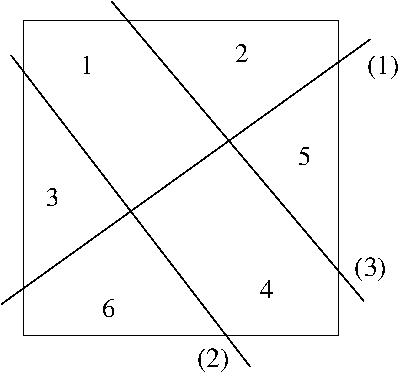
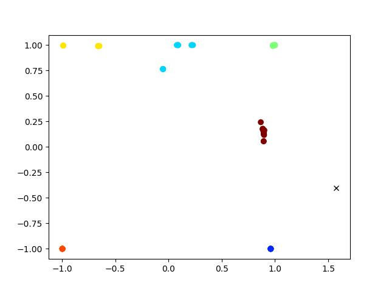

A 每一章长什么样同一套骨架重复 11 次，习惯之后你就能高速阅读：
板块 作用 看到它时该做什么
讲解单元 （带编号的小节）把概念从零讲清楚：直觉 → 公式 → 逐个符号解释 → 手算例子 慢读，读完在纸上复述一遍 LAB 实验 可拖、可点、可播放的交互图 动手玩 1–2 分钟，把参数推到极端看会发生什么 例题 （蓝色）课内 tutorial 原题，答案逐步给全 先盖住答案自己做，再逐行对 练习 （绿/黄/红）易 → 中 → 难，检验是否真的会 至少做完「易」和「中」 变种 （紫色）把课内题换个数字/换个问法，防背答案 考前最后一遍做这个 术语表 中英对照 + 一句话记忆钩子 考前 10 分钟扫一遍
B 三个必须养成的答题习惯
考试技巧
1. 先写符号约定。 “Let $w_{ji}$ denote the weight from unit $i$ to unit $j$, and $d_j=\partial E/\partial s_j$.”
这一句话能救回大量因为符号不同而被判错的分。
考试技巧
2. 每一步只做一件事，并写出来。 手算反向传播时，一行只写一个量（$u_j$、$y_j$、$dz_k$、$du_j$），
中间结果保留 4 位小数。考官给的是过程分。
考试技巧
3. 答案要有单位与判断。 “$H(p)=2.838$ nats”“KL $\ge 0$，这里两者不相等所以严格大于 0”
—— 一句话解释往往就是那 1 分。
考场英文 · 开场三句
“I denote the weight from unit i to unit j by $w_{ji}$, the bias by $b_j$, and the pre-activation by $s_j$.”
“Using the chain rule, the error signal at unit j is $d_j=\partial E/\partial s_j$.”
“Since the data are linearly separable, the perceptron converges in a finite number of steps.”
中文意思：先声明符号 → 说明用了链式法则 → 引用定理。三句话覆盖了 80% 的手算题开头。
C 术语怎么背才不忘不要背中文翻译，背「英文词 → 一个画面 → 一句用途 」三件套。比如：
英文 画面 一句用途
backpropagation 误差像水一样从输出往回渗 算每个权重该往哪调 vanishing gradient 越往回渗水越少，最后干了 深层网络学不动的原因 overfitting 把练习册答案背下来，换题就崩 训练好、测试差 KL divergence 用错的密码本多花的字节数 衡量两个分布差多少
每章末尾的术语表就是这个格式。背的时候出声念英文 ，考试时才写得出来。
D 三种复习路线
路线 1 · 只剩一晚（约 4 小时）
每章只读「讲解单元」的前两段 + 看 LAB + 做「易」练习；然后做模拟卷 ①。放弃推导，保住计算题。
路线 2 · 有两天（约 10 小时）
第一天：第 1–6 章完整过，含所有例题；第二天：第 7–11 章 + 三套模拟卷，错题回看对应小节。
路线 3 · 想拿高分（一周）：每天两章，把「变种题」全部手写一遍，并自己给每章画一张一页纸的公式卡。
关于答案
所有答案默认折叠，是为了让你先想再看 。侧栏有「展开本页全部答案」，考前快速扫读时用。
每章的「标记本章已掌握」会记在浏览器里，侧栏进度条实时更新。
E 课内资源在哪
讲义 ：lectures/ 下 34 个 PDF（每讲 1 页版 + 4up 版）。Tutorial 题目与解答 ：tutorials/ （Week 2–9）。老师 Keynote 答案 ：ans/Tut1.html … Tut5.html ，公式与表格是原始截图，答案数值以它为准。
手册里的每个数字都用程序重算过；若与老师原图有出入，以原图为准 ，并把差异记在术语表旁边。
模块 01 · Lecture 1a / 1b
神经元与网络的基本零件
深度学习听起来吓人，但整门课的第一层地基只有一个式子：加权求和 + 一个弯曲函数 。
这一章把「一个单元在算什么」「为什么要弯曲」「网络有多少参数」「学习到底在最小化什么」四件事讲透。
后面 10 章都是在这四件事上加零件。
考试怎么考 给结构数参数；给输入和权重算输出；解释某个激活函数为什么好；问「为什么需要非线性」。
你需要先会 向量点积、求和符号 $\sum$、指数函数、链式法则（下一章会补）。
1.1 一个神经元，就是一次「加权投票」
想象你要判断「这张图是不是猫」。你手里有几条线索：有没有胡须（$x_1$）、耳朵尖不尖（$x_2$）、
体型大不大（$x_3$）。每条线索的重要程度不同，你给它们打分：胡须很重要（$w_1=3$），
耳朵一般（$w_2=1$），体型甚至是反向证据（$w_3=-2$，越大越不像猫）。
于是你的判断分数就是「线索 × 权重」的累加，再减去一个门槛（你有多不情愿说“是猫”）：
单个神经元（unit / neuron）
$$s=\sum_{i=1}^{n} w_i x_i + b \qquad\text{（加权和，pre-activation）}$$
$$y=f(s)\qquad\text{（激活后的输出，activation）}$$
逐个符号
$x_i$ 第 $i$ 个输入（input）。图片里就是像素，词袋里就是词频。 $w_i$ 权重（weight）。它是学出来的 ：模型唯一真正改变的东西。 $b$ 偏置（bias）。可以理解成「门槛的负数」：分数要超过 $-b$ 才兴奋。 $s$ 加权和 / 预激活（pre-activation）。注意：反向传播里的 $d=\partial E/\partial s$ 就是对它求导。 $f$ 激活函数（activation function）。下一节的主角。
为什么要有 bias
没有 $b$，当所有输入都是 0 时输出永远是 $f(0)$，模型连「整体偏保守还是偏激进」都调不了。
数学上 bias 等价于给输入多加一维恒为 1 的 $x_0=1$，所以很多教材把 $b$ 写成 $w_0$。
LAB 01
激活函数长什么样，导数长什么样
切换曲线 / 拖 s
怎么读这张图： 实线是 $f(s)$，紫色虚线是它的导数 $f'(s)$，红短线是当前点的切线。
你会看到 sigmoid 的导数最高只有 0.25（在 $s=0$），而 ReLU 的导数在正半轴恒为 1 —— 这正是后面「梯度消失」的根源。
1.2 为什么必须有激活函数：没有它，深度毫无意义
先把结论说了：如果每一层都只是线性变换，叠 100 层等于 1 层。 证明只需要一行矩阵乘法。
设两层都是线性的（$f$ 是恒等映射）：
$$y = W_2\,(W_1 x) = (W_2W_1)\,x = W x$$
括号可以随便挪，$W_2W_1$ 仍然是一个矩阵。所以「深度」在纯线性网络里只是把权重换个写法，
表达能力一点没增加。引入非线性 $f$ 之后，$W_2 f(W_1x)$ 就不能再合并成一个矩阵了 ——
网络才开始能表示「弯曲」的决策边界。
一句话记住
非线性 = 网络能弯曲 = 能表示 XOR、能逼近任意连续函数（universal approximation）。
线性 = 只能画一条直线/一个平面。
这也解释了为什么第 2 章的感知机（阶跃函数，只有 0 和 1 两档）连 XOR 都做不了，
而加一个隐藏层就可以：中间层先把空间折一下，输出层再切一刀。
顺手复习：生物神经元 ↔ 人工单元
soma胞体 做求和与激活的那个单元本体。
dendrite树突 接收信号 → 输入 $x_i$。
axon轴突 把输出送出去 → $y$。
synapse突触 连接强度 → 权重 $w_i$；学习就是改突触强度（synaptic plasticity）。
spike / firing rate脉冲 / 放电率 生物是离散脉冲、异步；人工单元是连续实数、同步逐层。这是两者最大的差别。
若题目问「这个模型哪里不像大脑」，标准答法：没有时间维度、没有脉冲编码、反向传播需要对称的反馈通路，
在生物上不可信（biologically implausible）。
1.3 从单元到网络：前向传播就是反复代入
把单元排成列，前一列的每个输出都接到后一列的每个输入，就叫全连接层 （fully connected / dense layer）。
「前向传播」（forward pass）没有任何魔法：从左到右，一层一层算下去。
下面这个 2-2-1 网络，我们完整手算一遍。这种题考试必出，一定要会。
给定
$$x_1=0.5,\quad x_2=-0.4$$
$$w_{11}=0.6,\; w_{12}=-0.3,\; b_1=0.2;\qquad w_{21}=0.4,\; w_{22}=0.8,\; b_2=-0.5$$
$$v_1=1.2,\quad v_2=-0.9,\quad c=0.1$$
step 1 隐藏单元 1 的加权和：$u_1=0.6(0.5)+(-0.3)(-0.4)+0.2=0.3+0.12+0.2=0.62$。
step 2 过 sigmoid：$y_1=\sigma(0.62)=\dfrac{1}{1+e^{-0.62}}=0.6502$。
step 3 隐藏单元 2：$u_2=0.4(0.5)+0.8(-0.4)-0.5=0.2-0.32-0.5=-0.62$，$y_2=\sigma(-0.62)=0.3498$。
step 4 输出层是线性的：$z=1.2(0.6502)+(-0.9)(0.3498)+0.1=0.7802-0.3148+0.1$。
$z=0.5654$
易错
矩阵写法 $y=f(Wx+b)$ 里，$W$ 的第 $j$ 行对应第 $j$ 个单元，所以 $w_{ji}$ 的下标是「目标在前，来源在后 」。
写反了整道题全错。答题时先写一句 “$w_{ji}$ connects unit $i$ to unit $j$”。
1.4 参数计数：考官最爱的一分钟题
全连接层里，每个「输入—输出」对有一个权重，每个输出单元有一个 bias。所以第 $l$ 层（输入 $n_{l-1}$ 个，输出 $n_l$ 个）：
参数个数
$$P_l=\underbrace{n_{l-1}\times n_l}_{\text{权重}}+\underbrace{n_l}_{\text{bias}},\qquad
P=\sum_{l=1}^{L}P_l$$
三个高频陷阱：
bias 别忘了 ：题目写“including biases”才加，没写也要说明你加了。输入层不算一层 ：输入不是参数，只是数据。卷积层不是全连接 ：权重共享，参数是 $k\times k\times C_{\text{in}}\times C_{\text{out}}+C_{\text{out}}$（第 8 章细讲）。
LAB 02
拖宽度，看参数怎么爆炸
每层单元数可调
注意总参数随宽度平方 增长：宽度翻倍，参数约变四倍。这就是大模型贵的原因，也是为什么卷积（权重共享）重要。
1.5 学习 = 把一个「错多少」的数压到最小
网络输出的 $z$ 和正确答案 $t$（target）之间的差距，需要一个数字来衡量，叫损失函数 （loss / cost / error）。
整门课的所有「学习」都在做同一件事：调权重让损失变小。
两种最常用的损失
$$\text{平方误差（回归）:}\quad E=\frac{1}{2}\sum_{k}(z_k-t_k)^2$$
$$\text{交叉熵（分类）:}\quad E=-\sum_{k}t_k\ln y_k$$
平方误差前面的 $\tfrac12$ 只是为了求导时把 2 消掉，不影响最优解。交叉熵为什么长这样、为什么分类更爱用它，
第 7 章会用一整章讲清楚；现在只要知道：
场景 输出层 损失 为什么
回归（预测一个数） 线性 平方误差 误差大时惩罚更重，梯度随误差线性增长 二分类 sigmoid 二元交叉熵 配合起来梯度正好是 $y-t$，不会被 sigmoid 压扁 多分类 softmax 交叉熵 同上，且概率解释干净
为什么不能只用「分类错误率」
错误率是阶梯函数，几乎处处导数为 0，梯度下降完全不知道该往哪走。损失函数必须是光滑可导 的替身。
1.6 四个激活函数，一张表背完
名字 公式 值域 导数 什么时候用
step 阶跃$1$ if $s\gt 0$ else $0$ $\{0,1\}$ 几乎处处 0 感知机、理论证明 sigmoid $\dfrac{1}{1+e^{-s}}$ $(0,1)$ $y(1-y)\le 0.25$ 二分类输出、LSTM 的门 tanh $\dfrac{e^{s}-e^{-s}}{e^{s}+e^{-s}}$ $(-1,1)$ $1-y^2\le 1$ 隐藏层（零中心，收敛更快） ReLU $\max(0,s)$ $[0,\infty)$ $1$ if $s\gt 0$ else $0$ 现代网络隐藏层默认 softmax $\dfrac{e^{z_i}}{\sum_j e^{z_j}}$ 概率，和 = 1 见第 7 章 多分类输出层
记忆钩子
sigmoid 的导数就是 $y(1-y)$（输出自己就能算），tanh 是 $1-y^2$。这两个式子在手算反向传播时能省一半时间。
ReLU 的导数是「看 $s$ 的正负，不是看 $y$」—— 这点很多人错。
考场英文
“ReLU is piecewise linear and its gradient is exactly 1 for positive pre-activations, which mitigates vanishing gradients.”
“Sigmoid saturates for large $|s|$, so its derivative vanishes and deep stacks learn very slowly.”
万能两句：ReLU 缓解梯度消失；sigmoid 会饱和。
例题
例题 1 数一数参数
一个全连接网络：输入 6 维 → 隐藏层 2 个 tanh 单元 → 输出 3 个 sigmoid 单元。共有多少个可训练参数（含 bias）？
A fully connected network with 6 inputs, 2 hidden tanh units and 3 sigmoid outputs — how many trainable parameters including biases?
显示答案 ▼
23 个参数
激活函数不引入参数 （tanh / sigmoid 没有可学的东西）。这是考官最常设的陷阱：把激活函数也数进去。
例题 2 手算一次前向传播
用 1.3 节那组权重，输入 $x=(0.5,-0.4)$，求隐藏层输出 $y_1,y_2$ 与最终输出 $z$（4 位小数）。
显示答案 ▼
$u_1=0.62,\;y_1=\sigma(0.62)=0.6502$；$u_2=-0.62,\;y_2=\sigma(-0.62)=0.3498$。
$z=1.2(0.6502)-0.9(0.3498)+0.1=0.5654$。
英文写法
“The pre-activation of the first hidden unit is $u_1=0.62$, hence $y_1=\sigma(0.62)=0.6502$.”
练习
易 练习 1 · 四种激活各算一次
某单元 $s=-1.5+2x_1-x_2$，输入 $(x_1,x_2)=(1,0.5)$。给出 step（阈值 0）、sigmoid、tanh、ReLU 四种激活下的输出（3 位小数）。
显示答案 ▼
$s=-1.5+2(1)-0.5=0$。
step $s=0$ 不满足 $s\gt 0$，输出 $0$。
要点 ：阈值处的取舍是约定问题，答题时写 “taking step$(0)=0$” 即可。
中 练习 2 · 反推隐藏层宽度
一个 4 输入 → 单隐藏层（tanh）→ 2 输出的全连接网络共有 79 个参数（含 bias）。隐藏层有多少个单元？
显示答案 ▼
设隐藏层 $h$ 个单元：第一层 $4h+h$，第二层 $2h+2$，合计 $7h+2$。
$7h+2=79\Rightarrow h=11$。
11 个隐藏单元
考场写法 ：“Let $h$ be the number of hidden units. Then $7h+2=79$, so $h=11$.”
难 练习 3 · 证明线性网络没有深度
设两层网络都是线性激活 $y=c\,s$。证明：无论权重取何值，整个网络都等价于一个单层线性变换；并说明为什么这对「深度」是致命的。
显示答案 ▼
第一层 $h=W_1x+b_1$，第二层 $y=W_2h+b_2=W_2(W_1x+b_1)+b_2=(W_2W_1)x+(W_2b_1+b_2)$。
令 $W=W_2W_1$、$b=W_2b_1+b_2$，则 $y=Wx+b$ —— 与单层完全同形，参数量还更多（$W_2W_1$ 只有 $\min$ 秩的自由度）。
结论：线性堆叠 ⊂ 单层线性
深度只有在层间插入非线性 时才有意义，因为此时括号不能挪：$W_2 f(W_1x)\ne (W_2W_1)x$。
英文写法
“Composing linear maps yields another linear map, so a stack of linear layers has exactly the representational power of a single linear layer.”
变种题
变种 1 把 tanh 换成 PReLU
练习 2 的网络若把 tanh 换成「带 1 个可学习参数的 PReLU」：$f(s)=\max(s,0)+a\min(s,0)$，每个单元一个 $a$。参数总数变成多少？
显示答案 ▼
原 79 个 + 11 个 $a$ = 90 。
注意：如果题目说「所有单元共享一个 $a$」，那只加 1 个，变成 80。审题时看清 “per unit” 还是 “shared”。
变种 2 用一句话解释梯度消失
用 sigmoid 堆 10 层，为什么靠近输入的层几乎学不动？用导数公式定量说明。
显示答案 ▼
sigmoid 导数 $f'=y(1-y)\le 0.25$。反向传播时每过一层要乘一次局部导数，10 层最多乘 $0.25^{10}\approx 9.5\times10^{-7}$。
即梯度从输出到输入衰减了约 $10^6$ 倍，权重更新量小到可以忽略 —— 这就是 vanishing gradient。
$0.25^{10}\approx 9.5\times 10^{-7}$
本章术语表（考前扫一遍）
unit / neuron单元 / 神经元 一个「加权求和 + 激活」的计算单元。
weight / bias权重 / 偏置 可训练参数；bias 相当于门槛的负数。
pre-activation预激活 加权和 $s$，激活前的值；反向传播对它求导。
activation function激活函数 引入非线性的函数，如 sigmoid / tanh / ReLU。
fully connected / dense全连接 相邻两层所有单元两两相连。
forward pass前向传播 从输入逐层算到输出。
loss / cost / error损失 衡量预测与目标差距的可导标量。
saturation饱和 激活函数进入平坦区，导数趋近 0。
universal approximation通用逼近 含非线性隐藏层的网络可逼近任意连续函数。
模块 02 · Lecture 1c · Tutorial 1 Q1–Q2
感知机与学习算法
感知机是「最早的神经网络」，也是本课程手算题的重灾区 ：给你三个点、一组初始权重，
让你一步一步更新，最后写出权重的变化表。这一章把几何直觉、更新规则、收敛条件和 XOR 反例一次讲完。
考试怎么考 手工构造一个能分开数据的感知机；追踪学习算法（给表格）；判断是否线性可分；证明 XOR 不可分。
你需要先会 直线方程 $w_0+w_1x+w_2y=0$、点积、符号判断。
2.1 感知机：用一条直线把平面切成两半
感知机就是一个「不弯曲」的神经元：激活函数是阶跃函数，输出只有 $+1$ 和 $-1$ 两种。
感知机（perceptron）
$$s=w_0+\sum_{i=1}^{n}w_ix_i,\qquad y=\begin{cases}+1,& s\gt 0\\ -1,& s\le 0\end{cases}$$
$s=0$ 这个方程在二维平面上是一条直线 ，在 $n$ 维空间里是一个超平面 （hyperplane）。
感知机的全部本领，就是选一条直线，把 $+1$ 的点放一边、$-1$ 的点放另一边。
几何记忆
权重向量 $(w_1,w_2)$ 是这条直线的法向量 ，它指向 $+1$ 那一侧。
$w_0$ 决定直线离原点多远：$w_0$ 越大，直线越往负方向平移。
所以「训练感知机」= 慢慢转动、平移这条直线，直到所有点都在正确的一侧。下一节的 LAB 就是这件事的动画。
2.2 更新规则：错了就往正确方向推一把规则非常朴素：只看分错的点 ，把它往正确的一侧推。
感知机学习规则（perceptron learning rule）
$$w \leftarrow w+\eta\,\frac{t-y}{2}\,x,\qquad x=(1,x_1,\dots,x_n)$$
$t$ 目标标签（target），$+1$ 或 $-1$。 $y$ 当前预测，$+1$ 或 $-1$。 $\eta$ 学习率（learning rate），控制每步走多大。 $\frac{t-y}{2}$ 只有三种取值：$0$（对了，不动）、$+1$（该是正却判负）、$-1$（该是负却判正）。
所以每次更新，实际上是加上或减去一整个 $x$（再乘 $\eta$） 。
为什么除以 2？因为课件用的标签是 $\pm1$，$t-y=\pm2$；除以 2 后步长正好是 $\eta\cdot x$，
这与课件表格「$\eta=1$ 时每步改变 1」完全一致。答题时先声明你的约定 ，避免符号争议。
为什么这样就能收敛
分错时，更新后的 $s'$ 会变化 $\eta\frac{t-y}{2}\,(x\cdot x)$。因为 $x\cdot x\gt 0$，
这个变化的方向恰好让 $s'$ 朝正确的符号移动。每次错误都换来一次「往对的方向挪」，所以只要存在一条完美直线，就一定能挪到。
易错
更新时用的是更新前 的预测 $y$。同一轮里刚更新过权重，下一个点要用新权重 重新算 $s$。
这两句话是很多人表格算错的原因。
2.3 把 12 步完整算一遍（Tutorial 1 Q2）数据：$a=(0,1)\to-1$，$b=(2,0)\to-1$，$c=(1,1)\to+1$。初始 $w=(-1.5,\,0,\,2)$，$\eta=1$，按 $a\to b\to c$ 循环。
LAB 03
看分界线一步步转到位
可换 η / 单步 / 播放
红圈＝当前处理的点，外圈变色表示「这一步更新了」还是「判定正确、跳过」。注意第 8 步：直线已经差不多对了，
但 $b$ 又跑到错误一侧，于是被拉回来 —— 这就是感知机典型的「来回修」。
步 w₀ w₁ w₂ 点 s 动作 更新后 (w₀,w₁,w₂)
1 −1.5 0 2 a (0,1) −1 +0.5 Sub (−2.5, 0, 1) 2 −2.5 0 1 b (2,0) −1 −2.5 — (−2.5, 0, 1) 3 −2.5 0 1 c (1,1) +1 −1.5 Add (−1.5, 1, 2) 4 −1.5 1 2 a (0,1) −1 +0.5 Sub (−2.5, 1, 1) 5 −2.5 1 1 b (2,0) −1 −0.5 — (−2.5, 1, 1) 6 −2.5 1 1 c (1,1) +1 −0.5 Add (−1.5, 2, 2) 7 −1.5 2 2 a (0,1) −1 +0.5 Sub (−2.5, 2, 1) 8 −2.5 2 1 b (2,0) −1 +1.5 Sub (−3.5, 0, 1) 9 −3.5 0 1 c (1,1) +1 −2.5 Add (−2.5, 1, 2) 10 −2.5 1 2 a (0,1) −1 −0.5 — (−2.5, 1, 2) 11 −2.5 1 2 b (2,0) −1 −0.5 — (−2.5, 1, 2) 12 −2.5 1 2 c (1,1) +1 +0.5 — (−2.5, 1, 2)
怎么读这张表
共 9 次更新、12 次访问（3 遍 + 第 4 遍的前 3 个点，第 4 遍全部正确 ⇒ 停止）。
最终 $w=(-2.5,\,1,\,2)$ ，即直线 $-2.5+x_1+2x_2=0$。验算：$a:-0.5$，$b:-0.5$，$c:+0.5$，符号全对。
考场最常丢分的地方
只写到第 9 步就停。判定「收敛」必须再完整扫一遍三个点且全部正确 ，所以表格要写到第 12 行。
写的时候在表下补一句 “No further updates occur, hence the algorithm terminates.”
2.4 它什么时候保证停下来感知机收敛定理 ：若数据线性可分，且间隔为 $\gamma$、样本半径 $R$，则更新次数不超过 $(R/\gamma)^2$，与初始权重无关。
反过来：若数据线性不可分，算法永远不收敛 ，会在两个错误之间无限循环。这是考试最爱问的「判断 + 解释」。
为什么与 η 无关
$\eta$ 只改变权重向量的长度 ，不改变方向。而分类只取决于 $s$ 的符号，把 $w$ 整体放大或缩小不影响符号。
所以 $\eta$ 只影响收敛速度（步数），不影响是否收敛。
感知机的另一个毛病：它找到的分界线不是唯一的 。数据可分时，任何一条能分开的线都算对，算法停在哪条取决于初始值。
这正是后面「支持向量机」和「逻辑回归 + 正则」想解决的问题。
2.5 构造题：手工挑一组权重
题目常给三个点，让你「用平面几何的方法」选 $w_0,w_1,w_2$。做法固定三步：
把点画出来，肉眼判断哪一条线能分开。
写出这条线的方程，例如 $x_1+2x_2-2=0$。
决定哪一侧是 $+1$：代入一个点看 $s$ 的符号，反了就整体乘 $-1$。
Tutorial 1 Q1 的一组解
$$w=(-2,\;0.5,\;1.8)\quad\Longrightarrow\quad s=-2+0.5x_1+1.8x_2$$
点 s 符号 目标 结果
a (0,1) −0.2 − −1 ✓ b (2,0) −1.0 − −1 ✓ c (1,1) +0.3 + +1 ✓
注意：答案不唯一 。只要三个符号对，任何一组都拿满分。答题时最好写一句 “Any weights satisfying these inequalities are acceptable.”
而 XOR 就不行：$(0,0),(1,1)\to 0$ 与 $(0,1),(1,0)\to 1$ 交错分布，任何一条直线都只能切出一种颜色。
例题（课内原题）
例题 1 手工构造感知机
为 $a(0,1)\to-1$，$b(2,0)\to-1$，$c(1,1)\to+1$ 选一组 $w_0,w_1,w_2$，使感知机正确分类。
Construct by hand a perceptron that correctly classifies the three points.
显示答案 ▼
三个点里 $c$ 在左上，$a,b$ 在下面。取一条把 $c$ 单独隔开的线，例如过 $(0.6,0)$ 和 $(0,0.55)$ 的线，
其方程约为 $0.5x_1+1.8x_2-2=0$，即 $s=-2+0.5x_1+1.8x_2$。
验算：$a\to-0.2$，$b\to-1.0$，$c\to+0.3$，符号为 $-, -, +$，与目标一致。
$w=(-2,\;0.5,\;1.8)$
把三个点画在纸上、用尺子比一条线，再读出截距和斜率，是考场上最快的方法。
例题 2 追踪学习算法（12 步全表）
同数据，$\eta=1.0$，$w=(-1.5,0,2)$。逐步更新直到全部分类正确，写出每步后的权重。
Demonstrate the perceptron learning algorithm, indicating the new weights at the end of each step.
显示答案 ▼
完整表格见 2.3 节。关键节点：
第 1 步 $s=+0.5$，$a$ 应为 $-1$，故 $w\leftarrow w-x=( -2.5,0,1)$。
第 8 步 $s=+1.5$，$b$ 应为 $-1$，故再减一次 $x=(1,2,0)$，得 $(-3.5,0,1)$。
第 9 步 $s=-2.5$，$c$ 应为 $+1$，加 $x=(1,1,1)$，得 $(-2.5,1,2)$。
第 10–12 步 三个点全对，无更新 ⇒ 算法终止。
$w=(-2.5,\;1,\;2)$，共 9 次更新
练习
易 练习 1 · 判断类别感知机 $w=(1,-2,1)$，判断 $(3,1)$ 与 $(1,2)$ 的类别。
显示答案 ▼
$(3,1)$：$s=1-2(3)+1(1)=-4\lt 0\Rightarrow y=-1$。
$(1,2)$：$s=1-2+2=1\gt 0\Rightarrow y=+1$。
中 练习 2 · 做一次更新
当前 $w=(0,1,-1)$，样例 $x=(2,1)$，$t=-1$，$\eta=0.5$。写出更新后的权重，并说明几何上发生了什么。
显示答案 ▼
先算 $s=0+2-1=+1\Rightarrow y=+1$，与 $t=-1$ 不符，需要更新。
$\eta\frac{t-y}{2}=0.5\times\frac{-2}{2}=-0.5$，故 $w\leftarrow w-0.5(1,2,1)=(-0.5,\,0,\,-1.5)$。
$w=(-0.5,\,0,\,-1.5)$
几何：分界线被推着远离这个点，使它在下一轮落到负侧。更新方向沿输入向量 $x$，步长与 $\eta$ 成正比。
难 练习 3 · 证明 XOR 不可分
证明不存在 $w_0,w_1,w_2$ 使单层感知机能实现 XOR：$(0,0),(1,1)\to-1$，$(0,1),(1,0)\to+1$。
显示答案 ▼
四个约束：
后两式相加：$2w_0+w_1+w_2\gt 0$。由第一式 $w_0\le0$，由第二式 $w_1+w_2\le -w_0$，于是
$2w_0+w_1+w_2\le 2w_0-w_0=w_0\le 0$，与 $\gt 0$ 矛盾。
矛盾 ⇒ XOR 线性不可分
直觉版答案：XOR 的两个正类在对角线上，两个负类在另一条对角线上，任何直线都切不开。
英文写法
“Summing the two positivity constraints gives $2w_0+w_1+w_2\gt 0$, while the two negativity constraints imply $2w_0+w_1+w_2\le w_0\le 0$ — a contradiction.”
变种题
变种 1 把 η 改成 0.5例题 2 若 $\eta=0.5$（其余不变），最终权重是多少？步数变了吗？
显示答案 ▼
重跑：仍是第 9 次更新后收敛（第 10–12 个点全对），最终 $w=(-2.0,\,1.0,\,1.5)$，共 9 次更新。
$w=(-2,\,1,\,1.5)$
要点：$\eta$ 缩小后轨迹不是 简单等比例缩放 —— 落点变了，后面「哪个点会错」的顺序也跟着变。
$\eta$ 只影响速度与解的位置，不影响「可分 ⇒ 有限步收敛」这个结论。
变种 2 用感知机实现 AND / OR写出实现 2 输入 AND 与 OR 的权重（输入 $0/1$，输出 $1$ 为正类）。
显示答案 ▼
AND ：$w=(-1.5,\,1,\,1)$。只有 $(1,1)$ 时 $s=0.5\gt 0$。
OR ：$w=(-0.5,\,1,\,1)$。任一个为 1 时 $s=0.5\gt 0$；只有 $(0,0)$ 时 $s=-0.5\le0$。
AND $(-1.5,1,1)$；OR $(-0.5,1,1)$
把两个感知机叠起来就能做 XOR：$x_1$ OR $x_2$ 减去 $x_1$ AND $x_2$ —— 这正是「加隐藏层」的动机。
本章术语表
perceptron感知机 线性加权和 + 阶跃激活的二分类器。
hyperplane / decision boundary超平面 / 决策边界 $s=0$ 的点集，把空间分成两侧。
linearly separable线性可分 存在一个超平面能完全分开两类。
perceptron learning rule感知机学习规则 $w\leftarrow w+\eta\frac{t-y}{2}x$，仅错分时更新。
learning rate学习率 每步更新幅度，只影响收敛速度。
convergence theorem收敛定理 线性可分时有限步收敛，上界约 $(R/\gamma)^2$。
margin $\gamma$间隔 数据点到分界面的最小距离，越大越容易学。
模块 03 · Lecture 1d / 3a · Tutorial 2
反向传播：网络到底怎么学
这是整门课的计算核心 。一句话：损失对某个权重的导数 = 「这个权重下游的误差」×「它上游的输入」。
考试几乎一定有一道「手算一次前向 + 反向 + 更新」的大题。掌握三件事就不会错：
链式法则、每个节点的局部导数、更新要减不要加。
考试怎么考 给网络结构、权重、输入、目标、学习率，求所有偏导并写出更新后的权重；或只问某个权重的梯度。
你需要先会 链式法则、偏导、sigmoid/tanh/ReLU 的导数（上一章那张表）。
3.1 问题：输出错了，该怪哪个权重？
一个网络有几万个权重，输出错了，你想知道「把 $w_{11}$ 调大一点点，损失会变大还是变小、变多少」。
这个量就是偏导 $\partial E/\partial w_{11}$。有了它，更新就只是往反方向走一小步：
梯度下降（gradient descent）
$$w \leftarrow w-\eta\frac{\partial E}{\partial w}$$
问题是：$w_{11}$ 藏在网络深处，中间隔了好几层函数。直接求导要展开成巨大的表达式。
链式法则 （chain rule）告诉我们：可以一段一段地乘起来，从输出往回算 —— 这就是反向传播。
$$\frac{\partial E}{\partial w}=\frac{\partial E}{\partial y}\cdot\frac{\partial y}{\partial s}\cdot\frac{\partial s}{\partial w}$$
三段各管一件事：下游有多错 （$\partial E/\partial y$）、激活函数把误差放大还是缩小 （$f'(s)$）、输入有多大 （$\partial s/\partial w=x$）。
为什么叫「反向」
因为 $\partial E/\partial y$ 依赖下一层的误差，而下一层的误差又依赖再下一层……所以必须从输出层开始，倒着算 。
倒着算还有个好处：同一条路径上的中间结果可以复用，一次反向传播就能拿到所有 权重的梯度（复杂度与前向同阶）。
3.2 两个公式，覆盖所有手算题把「误差信号」定义为损失对预激活 的导数，记作 $d_j$：
定义
$$d_j=\frac{\partial E}{\partial s_j}$$
反向传播（对隐藏层 $j$）
$$d_j=f'(s_j)\sum_{k} d_k\,w_{kj}$$
权重与偏置的梯度
$$\frac{\partial E}{\partial w_{ji}}=d_j\,y_i,\qquad \frac{\partial E}{\partial b_j}=d_j$$
逐项解释
$f'(s_j)$ 本单元激活函数的导数，用预激活 $s_j$ 算（ReLU 特别容易在这里错）。 $\sum_k d_k w_{kj}$ 所有下游单元把误差「按连接强度加权」传回来。这就是为什么叫 back-propagation 。 $y_i$ 本单元的输入（上一层的输出）。梯度 = 误差 × 输入。
输出层是特例，$d_k$ 直接由损失函数给出：
输出层配置 $d_k$ 记忆
线性输出 + 平方误差 $z_k-t_k$ 「预测减目标」 sigmoid + 二元交叉熵 $y_k-t_k$ sigmoid 的导数被约掉了 softmax + 交叉熵 $y_k-t_k$ 同上，第 7 章证明
这三个「正好是预测减目标」不是巧合
它们是故意配对 的：损失函数选得对，输出层的梯度就最简、最不容易饱和。这就是第 7 章「为什么分类要用交叉熵」的答案。
3.3 局部导数：只有三个要背
激活 $f'(s)$ 用 $s$ 表示 用输出 $y$ 表示 典型错误
sigmoid $\sigma(s)(1-\sigma(s))$ $y(1-y)$ 忘记最大值只有 0.25 tanh $1-\tanh^2(s)$ $1-y^2$ 写成 $y(1-y)$ ReLU $1$ if $s\gt 0$ else $0$ 不能用 $y$ 判断 用 $y\gt 0$ 判断（$y=0$ 既可能是负数也可能正好是 0） 线性 $1$ $1$ ——
dead ReLU
如果某个隐藏单元的 $s\lt 0$，它的导数是 0，于是 $d_j=0$，于是与它相连的所有 权重梯度都是 0 ——
这个单元这一步完全不学。若它长期为负，就永远学不回来，称为 dead ReLU。下一节的例题里就有这个现象。
3.4 梯度下降：走多快、往哪走、怎么不走歪有了梯度，最朴素的更新就是「往负梯度方向走一步」。步长由学习率 $\eta$ 控制，这一件事就能决定训练成败。
LAB 04
学习率大了会发生什么
拖 η 再按自动
把 $\eta$ 拖到 2 以上：点会在谷底两侧来回跳，甚至越跳越远（发散）。$\eta$ 太小则要很多步才到。
结论：$\eta$ 是「稳定」与「速度」的权衡。
实际训练里，人们用几个技巧让「走」更稳。考试常让你写出更新式并解释作用：
动量（momentum）
$$v \leftarrow \beta v-\eta\frac{\partial E}{\partial w},\qquad w\leftarrow w+v$$
权重衰减 / L2 正则
$$E_{\text{total}}=E+\frac{\lambda}{2}\lVert w\rVert^2\quad\Longrightarrow\quad w\leftarrow w-\eta\left(\frac{\partial E}{\partial w}+\lambda w\right)$$
技巧 解决什么 一句话
动量 震荡、峡谷地形 累积历史梯度，像小球滚下山有惯性 权重衰减 权重过大、过拟合 每步都往 0 拉一点，等价于 L2 正则 小批量（mini-batch） 计算量、噪声 用一小批样本估计梯度，噪声反而帮助逃离坏点 学习率衰减 后期震荡 先大后小，靠近最优解时细调
3.5 完整手算一次（Tutorial 2 Q2 原题）结构 2-2-2：隐藏层 ReLU，输出层线性，损失为平方误差。点击 LAB 右下角按钮一步步走，每一步右侧都会出现对应读数。
LAB 05
前向 → 损失 → 反向 → 更新，逐步高亮
播放 / 单步
注意第 7 步：$y_1$ 被 ReLU 掐成 0，于是 $du_1=0$，与它相连的 $w_{11},w_{12},b_1$ 在第 8 步完全不动 。
这不是算错，是 dead ReLU 的真实后果，也是考官爱考的点。
给定
$$w_{11}=0.5,\;w_{12}=-0.7,\;w_{21}=0.4,\;w_{22}=-0.6,\;b_1=-0.9,\;b_2=0.7$$
$$v_{11}=0.3,\;v_{12}=-0.6,\;v_{21}=-0.4,\;v_{22}=-0.8,\;c_1=-0.3,\;c_2=0.2$$
$$x=(0.5,-0.4),\quad t=(1.0,\,0.0),\quad \eta=0.5$$
量 值 怎么来的
$u_1,u_2$ −0.37, 1.14 $0.5(0.5)-0.7(-0.4)-0.9$；$0.4(0.5)-0.6(-0.4)+0.7$ $y_1,y_2$ 0, 1.14 ReLU：负数归零 $z_1,z_2$ −0.984, −0.712 $0.3(0)-0.6(1.14)-0.3$；$-0.4(0)-0.8(1.14)+0.2$ $E$ 2.2216 $\tfrac12[(z_1-1)^2+z_2^2]$ $dz_1,dz_2$ −1.984, −0.712 $z-t$ $dy_1,dy_2$ −0.3104, 1.76 $dz_1v_{11}+dz_2v_{21}$；$dz_1v_{12}+dz_2v_{22}$ $du_1,du_2$ 0, 1.76 $dy_1\cdot\text{ReLU}'(u_1)=0$；$dy_2\cdot1$
更新（$\eta=0.5$，注意所有含 $y_1$ 或 $du_1$ 的项都不动）：
$$w_{21}\leftarrow0.4-\tfrac12(1.76)(0.5)=-0.04,\qquad
w_{22}\leftarrow-0.6-\tfrac12(1.76)(-0.4)=-0.248$$
$$b_2\leftarrow0.7-\tfrac12(1.76)=-0.18,\qquad
v_{12}\leftarrow-0.6-\tfrac12(-1.984)(1.14)=0.5309$$
$$c_1\leftarrow-0.3-\tfrac12(-1.984)=0.692,\qquad
c_2\leftarrow0.2-\tfrac12(-0.712)=0.556$$
检查你的答案
更新后 $E$ 应该变小。可以快速估算：$z_1$ 从 $-0.984$ 向 $1$ 移动了约 $0.15$，$z_2$ 从 $-0.712$ 向 $0$ 移动了约 $0.09$，
所以损失一定下降。若你的更新让 $E$ 变大，八成是符号错了（加了梯度而不是减）。
例题（课内原题）
例题 1 最简单的梯度下降（Tutorial 2 Q1）
$f(x)=wx$，要求 $f(1)=1$。损失 $E=\tfrac12(wx-t)^2$，$\eta=0.5$，$w=0$。完成前两个 epoch 的表格。
Perform the first two epochs of gradient descent by hand.
显示答案 ▼
$x=1,t=1$，所以 $E=\tfrac12(w-1)^2$，$\dfrac{\partial E}{\partial w}=w-1$。
epoch w（更新前） E ∂E/∂w w（更新后）
0 0 0.5 −1 0.5 1 0.5 0.125 −0.5 0.75
每步把「离 1 的距离」缩小一半：$w\leftarrow w+0.5(1-w)$。所以 $w$ 依次是 $0,0.5,0.75,0.875,\dots$，极限为 1。
$w_1=0.5,\; w_2=0.75$
例题 2 两层网络的手算（Tutorial 2 Q2，必考题型）显示答案 ▼
完整数值见 3.5 节的表。答题顺序建议：
写符号约定（$w_{ji}$、$d_j$、$y_j$）。
前向：$u\to y\to z\to E$，每行一个量。
反向：$dz\to dy\to du$，并明确写出「ReLU 在 $u_1\lt 0$ 处导数为 0」。
更新：$w\leftarrow w-\eta\,du\,y_{\text{in}}$，逐项列出。
补一句结论：损失从 2.2216 下降。
英文写法
“Since $u_1\lt 0$, the ReLU derivative is zero and hence $du_1=0$; consequently $w_{11}$, $w_{12}$ and $b_1$ are unchanged in this update.”
练习
易 练习 1 · 单输出单元的梯度$z=0.8$，$t=1$，$E=\tfrac12(z-t)^2$，输入 $y=2$。求 $dz$ 与 $\partial E/\partial v$。
显示答案 ▼
$dz=z-t=-0.2$；$\partial E/\partial v=dz\cdot y=-0.4$。
更新（$\eta=0.5$）：$v\leftarrow v+0.2$，输出会朝 1 靠近。
练习 2 换激活函数重算
把例题 2 的隐藏层从 ReLU 换成 tanh，只重算 $y_1,y_2,dy_1,du_1,du_2$（4 位小数）。
显示答案 ▼
$y_1=\tanh(-0.37)=-0.3540$，$y_2=\tanh(1.14)=0.8144$。
$z_1=0.3(-0.3540)-0.6(0.8144)-0.3=-0.8948$，$z_2=-0.4(-0.3540)-0.8(0.8144)+0.2=-0.3099$。
$dz=(-1.8948,\,-0.3099)$；$dy_1=dz_1(0.3)+dz_2(-0.4)=-0.4445$；$dy_2=dz_1(-0.6)+dz_2(-0.8)=1.3849$。
$du_1=dy_1(1-y_1^2)=-0.3888$；$du_2=dy_2(1-y_2^2)=0.4663$。
$du=(-0.3888,\;0.4663)$
对比 ReLU 版的 $du_1=0$：换成 tanh 后第一个单元「活过来了」，也开始学习。这就是激活函数选择的实际影响。
练习 3 两个样本的批梯度
同一个 ReLU 网络，样本 2 的 $u_1=0.6,\;y_1=0.6,\;z_1=0.9,\;t_1=0$（只看输出 1）。求 $w_{11}$ 在两个样本上的总梯度，并说明 mini-batch 与在线更新的差别。
显示答案 ▼
样本 1：$du_1=0$（dead ReLU），贡献 $0$。
样本 2：$dz_1=0.9-0=0.9$，$dy_1=dz_1v_{11}=0.27$，$du_1=0.27$（$u_1\gt 0$ 导数为 1），$\partial E/\partial w_{11}=du_1x_1=0.27(0.5)=0.135$。
总梯度 $0.135$（若取平均则 $0.0675$）
差别：在线（SGD）每来一个样本就更新一次，噪声大但反应快；mini-batch 把梯度求和/平均后再更新一次，方向更准、可用矩阵运算加速。
批大小是「方差」与「速度」的权衡。
变种题
变种 1 交叉熵 + sigmoid 输出
二分类，输出 sigmoid，损失 $E=-[t\ln y+(1-t)\ln(1-y)]$。证明 $dz=y-t$，并解释为什么这比「sigmoid + 平方误差」好。
显示答案 ▼
$\dfrac{\partial E}{\partial y}=-\dfrac{t}{y}+\dfrac{1-t}{1-y}$，又 $y'=y(1-y)$，故
$dz=\dfrac{\partial E}{\partial y}y(1-y)=-[t(1-y)-(1-t)y]=y-t$。
$dz=y-t$
平方误差配 sigmoid 时，$dz=(y-t)y(1-y)$：当输出严重错误（$y$ 接近 0 或 1）时 $y(1-y)\to0$，梯度反而消失。
交叉熵把它约掉了，错误越大梯度越大，学得更快。
变种 2 动量 + 权重衰减
写出带动量与 L2 权重衰减的更新式，并说明两者各自解决什么问题。
显示答案 ▼
$v\leftarrow\beta v-\eta\left(\dfrac{\partial E}{\partial w}+\lambda w\right)$，$w\leftarrow w+v$。
动量（$\beta\approx0.9$）累积历史方向，抑制来回震荡、加速沿峡谷前进；权重衰减（$\lambda w$）每步把权重往 0 拉，
限制模型复杂度、缓解过拟合。
注意：两者都会改变「有效学习率」，$\lambda$ 太大模型会欠拟合。
本章术语表
chain rule链式法则 复合函数求导 = 各段导数相乘。
error signal $d_j$误差信号 $\partial E/\partial s_j$，反向传播的核心量。
gradient descent梯度下降 $w\leftarrow w-\eta\nabla E$。
learning rate学习率 步长；过大发散，过小太慢。
momentum动量 累积历史梯度，抑制震荡。
weight decay / L2权重衰减 在损失里加 $\lambda\lVert w\rVert^2$，压小权重。
dead ReLU死神经元 $s\lt 0$ 使导数为 0，该单元永久不更新。
vanishing / exploding gradient梯度消失 / 爆炸 连乘小于 1 或大于 1 的因子导致梯度趋 0 或爆掉。
mini-batch小批量 用一部分样本估计梯度。
模块 04 · Lecture 2a · Tutorial 3
概率、熵与 KL 散度
这一章的分数几乎全在「套公式 + 解释不对称性 」。三个公式必须背到能默写：熵、KL、高斯熵。
它们不是抽象概念 —— 熵就是「平均要几个 bit 才能描述这个分布」，KL 就是「用错密码本多花几个 bit」。
考试怎么考 算 $H(p)$、$D(p\Vert q)$、$D(q\Vert p)$、高斯情形的 KL 与 $W_2$；解释为什么 KL 不是距离；画 Huffman 树。
你需要先会 $\log_2$、求和、条件概率、$2\times2$ 矩阵行列式。
4.1 先补齐三个概率概念条件概率 ：已知 $B$ 发生时 $A$ 的概率，$P(A\mid B)=\dfrac{P(A\cap B)}{P(B)}$。乘法形式更常用：$P(A\cap B)=P(A\mid B)P(B)$。
贝叶斯定理 ：把「因果关系」倒过来用。
Bayes' theorem
$$P(A\mid B)=\frac{P(B\mid A)\,P(A)}{P(B)}\qquad\text{posterior}\propto\text{likelihood}\times\text{prior}$$
prior 先验：还没看证据时对 $A$ 的信念。 likelihood 似然：如果 $A$ 成立，看到证据 $B$ 的可能性。 posterior 后验：看完证据后更新的信念。 $P(B)$ 证据本身的总概率，通常用全概率公式展开：$P(B)=\sum_i P(B\mid A_i)P(A_i)$。
独立 ：$P(A\cap B)=P(A)P(B)$。不放回抽样不独立 ，这是例题 1 的坑。
4.2 熵：平均要几个 bit 才说得清
一个事件越「意外」，信息量越大。定义单个事件的信息量为 $-\log p$：概率 1 的事件没有信息（$-\log1=0$），
概率 1/8 的事件有 3 bit 信息。熵就是信息量的期望 ：
熵（entropy）
$$H(p)=-\sum_i p_i\log p_i$$
单位 $\log_2$ → bits ；$\ln$ → nats 。两者差一个常数 $\ln2$，题目不指定时任选但要写明。 约定 $0\log0=0$（概率 0 的事件不贡献信息）。 范围 $0\le H\le\log n$。均匀分布取最大值 $\log n$，确定性分布取 0。
直觉
均匀分布最「难猜」，所以熵最大；全押一个结果最容易猜，熵为 0。
熵衡量的是不确定性 ，不是「数量」。
4.3 交叉熵与 KL：密码本用错了要付多少
假设真实分布是 $p$，但你按 $q$ 来设计编码。平均码长就是交叉熵 ：$H(p,q)=-\sum_i p_i\log q_i$。
它一定不小于 $H(p)$，多出来的部分就是 KL 散度：
三个量的关系
$$D_{\mathrm{KL}}(p\Vert q)=\sum_i p_i\log\frac{p_i}{q_i}=H(p,q)-H(p)$$
$$\text{且}\quad D_{\mathrm{KL}}(p\Vert q)\ge 0,\qquad =0\iff p=q$$
KL 的三条性质（考试必答）
非负 由 $\ln x\le x-1$ 可证（Jensen 不等式）。 不满足对称 $D(p\Vert q)\ne D(q\Vert p)$，所以它不是距离 （不满足三角不等式）。 不满足三角不等式 这也是「散度 divergence」而不叫「距离 distance」的原因。
LAB 06
拖动 p、q 的柱子，看 KL 怎么变
8 个滑块可拖
试着只把 $q_1$ 从 0.5 拖到 0.05：$D(p\Vert q)$ 会爆得比 $D(q\Vert p)$ 快得多。
原因：$D(p\Vert q)$ 里权重是 $p_i$，只要 $p_i\gt 0$ 而 $q_i\to0$，$\log(p_i/q_i)\to\infty$，惩罚是无限大 。
这就是「KL 会重罚漏掉的概率质量」。
4.4 Huffman 编码：熵是可达到的下界给每个符号分配一串 0/1，使平均码长最短，做法是每次合并概率最小的两个：
把概率排序，取最小的两个合并成新节点，概率相加。
重复直到只剩一个根。
从根往下走，左 0 右 1（或反过来），得到每个符号的码字。
Huffman 的平均码长 $L$ 满足 $H(p)\le L\lt H(p)+1$。当且仅当所有概率都是 $2^{-k}$ 形式时，$L=H(p)$ 可以精确达到。
为什么 $L\ge H$
任何前缀码的平均码长都不可能低于熵，否则就相当于「无损压缩超过了信息量」，违反信息论。这是考试里解释题的标答。
4.5 高斯情形：只需要协方差多维高斯的熵只取决于协方差，与均值无关（均值只是平移，不改变「摊开的程度」）：
高斯熵（nats）
$$H=\frac{1}{2}\ln\left[(2\pi e)^d\det\Sigma\right]$$
两个高斯的 KL
$$D_{\mathrm{KL}}(p\Vert q)=\frac{1}{2}\left[\operatorname{tr}(\Sigma_q^{-1}\Sigma_p)+\delta^{\top}\Sigma_q^{-1}\delta-d+\ln\frac{\det\Sigma_q}{\det\Sigma_p}\right],\quad \delta=\mu_p-\mu_q$$
Wasserstein-2（对角协方差时）
$$W_2^2=\lVert\mu_1-\mu_2\rVert^2+\sum_i(\sigma_{1,i}-\sigma_{2,i})^2$$
KL 与 W₂ 的关键区别
KL 对支撑集不重叠 极度敏感（可能无穷大），而且不对称；$W_2$ 是真正的距离（对称、满足三角不等式），
即使两个分布完全分开也给出有限值。这就是 Wasserstein GAN 的动机。
LAB 07
两个高斯：熵、KL、W₂ 同时变
调 σ 和均值差
把 $q$ 的 $\sigma_1$ 拖到很小、均值差拉大：$D(p\Vert q)$ 会飙得比 $D(q\Vert p)$ 高一个量级。
与课内例题的数字（2.436 vs 23.21）对照着看，就明白「谁在分母上」有多重要。
例题（课内原题）
例题 1 两个袋子（Tutorial 3 Q1，贝叶斯）
袋 1：2 红 3 白；袋 2：3 红 2 绿。随机选一个袋子，不放回取两个球，结果都是红。求「选的是袋 1」的概率。
显示答案 ▼
先验 $P(B_1)=P(B_2)=0.5$。似然（不放回，第二个球受第一个影响）：
$P(RR\mid B_1)=\dfrac25\cdot\dfrac14=0.1$，$P(RR\mid B_2)=\dfrac35\cdot\dfrac24=0.3$。
$P(RR)=0.5(0.1)+0.5(0.3)=0.2$。
$P(B_1\mid RR)=\dfrac{0.5\times0.1}{0.2}=0.25$。
$P(B_1\mid RR)=1/4$
直觉检查：袋 2 的红球更多，所以「看到两个红」反而让袋 2 更可能 —— 后验从 0.5 降到 0.25，方向正确。
例题 2 离散熵与 KL（Tutorial 3 Q2）
$p=\langle\tfrac12,\tfrac14,\tfrac18,\tfrac18\rangle$，$q=\langle\tfrac14,\tfrac18,\tfrac18,\tfrac12\rangle$。求 $H(p)$、$D(q\Vert p)$、$D(p\Vert q)$，并解释哪个更大。
显示答案 ▼
$i$ $p_i$ $q_i$ $H$ 贡献 $q\log(q/p)$ $p\log(p/q)$
1 .5 .25 0.5 −0.25 0.5 2 .25 .125 0.5 −0.125 0.25 3 .125 .125 0.375 0 0 4 .125 .5 0.375 1.0 −0.25 合计 1.75 0.625 0.5
$H(p)=1.75$ bits，$D(q\Vert p)=0.625$，$D(p\Vert q)=0.5$
为什么 $D(q\Vert p)\gt D(p\Vert q)$？因为 $q$ 把 0.5 放在第 4 个符号上，而 $p$ 在那里只有 0.125：
用 $p$ 当密码本去编码 $q$，要在「$p$ 认为罕见」的符号上花很多 bit，代价更大。
例题 3 两维高斯：熵、KL、W₂（Tutorial 3 Q3）
$q:\mu_1=(1,0),\Sigma_1=\mathrm{diag}(0.04,4)$；$p:\mu_2=(0,0),\Sigma_2=\mathrm{diag}(1,1)$。求 $H(p),H(q),D(q\Vert p),D(p\Vert q),W_2^2$。
显示答案 ▼
$H(p)=\tfrac12\ln[(2\pi e)^2\cdot1]=2.838$；$H(q)=\tfrac12\ln[(2\pi e)^2\cdot0.16]=1.922$。
$D(q\Vert p)$：$\operatorname{tr}=0.04+4=4.04$，$\delta^{\top}\delta=1$，$\ln(1/0.16)=1.8326$，
故 $\tfrac12(4.04+1-2+1.8326)=2.436$。
$D(p\Vert q)$：$\operatorname{tr}=1/0.04+1/4=25.25$，$\delta^{\mathsf T}\Sigma_q^{-1}\delta=25$，$\ln(0.16)=-1.8326$，
故 $\tfrac12(25.25+25-2-1.8326)=23.21$。
$W_2^2=1^2+(0.2-1)^2+(2-1)^2=1+0.64+1=2.64$。
$H=(2.838,\,1.922)$，$D(q\Vert p)=2.436$，$D(p\Vert q)=23.21$，$W_2^2=2.64$
把 $\sigma_1=0.2$ 放进分母，$1/0.04=25$ 直接主导了 $D(p\Vert q)$ —— 这就是「KL 对窄分布极敏感」的数值证据。
练习
易 练习 1 · 两个二项分布$p=\langle\tfrac12,\tfrac12\rangle$，$q=\langle\tfrac34,\tfrac14\rangle$。求 $H(p),H(q),D(p\Vert q),D(q\Vert p)$。
显示答案 ▼
$H(p)=1$ bit；$H(q)=0.8113$ bit。
$D(p\Vert q)=0.5\log_2\frac{0.5}{0.75}+0.5\log_2\frac{0.5}{0.25}=-0.2925+0.5=0.2075$。
$D(q\Vert p)=0.75\log_2 1.5+0.25\log_2 0.5=0.4388-0.25=0.1887$。
$D(p\Vert q)=0.2075$，$D(q\Vert p)=0.1887$
两者相近但不相等 —— 这就是「不对称」的最简单例子。
练习 2 用熵判断编码效率某分布 $H=1.75$ bits，最优二元前缀码的平均码长可能是多少？若实际是 2.0 bit，说明什么？
显示答案 ▼
任何前缀码满足 $H\le L\lt H+1$，即 $1.75\le L\lt 2.75$。Huffman 达到区间内的最小可实现值（本例恰为 1.75，因为概率都是 2 的负幂）。
$L=2.0$ 意味着比熵多 0.25 bit/符号，即编码效率 $\eta=H/L=87.5\%$，有 12.5% 的冗余。
下界 1.75，冗余 0.25 bit/符号
练习 3 单变量高斯的 KL$p=\mathcal N(0,1)$，$q=\mathcal N(1,4)$。求 $H(p),H(q),D(p\Vert q),D(q\Vert p)$（nats）。
显示答案 ▼
$H(p)=\tfrac12\ln(2\pi e)=1.4189$；$H(q)=\tfrac12\ln(2\pi e\cdot4)=2.1121$。
$D(p\Vert q)=\tfrac12\left[\dfrac{1}{4}+\dfrac{1^2}{4}-1+\ln4\right]=\tfrac12(0.25+0.25-1+1.3863)=0.4431$。
$D(q\Vert p)=\tfrac12\left[4+1-1+\ln\tfrac14\right]=\tfrac12(4-1.3863)=1.3069$。
$0.4431$ 与 $1.3069$
把 $q$ 的方差 4 放进 $D(p\Vert q)$ 的分子，所以它更小；反向要除以 4，所以更大。规律：分母是哪个分布的方差，惩罚就往那个方向放大。
变种题
变种 1 证明 KL ≥ 0用 $\ln x\le x-1$ 证明 $D_{\mathrm{KL}}(p\Vert q)\ge0$，并说明等号条件。
显示答案 ▼
$-D=\sum_i p_i\ln\frac{q_i}{p_i}\le\sum_i p_i\left(\frac{q_i}{p_i}-1\right)=\sum_i q_i-\sum_i p_i=1-1=0$。
故 $D\ge0$；等号当且仅当对所有 $p_i\gt 0$ 有 $q_i=p_i$，即 $p=q$。
英文写法
“Using $\ln x\le x-1$ term by term gives $D_{\mathrm{KL}}(p\Vert q)\ge 0$, with equality iff $p=q$.”
变种 2 把 bits 换成 nats若上题全部改用 $\ln$，$H(p)$、$D(q\Vert p)$ 分别是多少？换算系数是什么？
显示答案 ▼
乘以 $\ln2=0.6931$：$H=1.75\times0.6931=1.2130$ nats，$D(q\Vert p)=0.625\times0.6931=0.4332$。
反之 nats → bits 除以 $\ln2$。KL 与熵同单位，换算一致，所以「哪个更大」的结论不变。
本章术语表
prior / posterior先验 / 后验 看证据前 / 后的信念。
likelihood似然 $P(\text{data}\mid\text{hypothesis})$。
entropy熵 $-\sum p\log p$，平均不确定性 / 最短平均码长。
cross-entropy交叉熵 $-\sum p\log q$，用 $q$ 编码 $p$ 的平均码长。
KL divergenceKL 散度 交叉熵减熵，非负、不对称。
relative entropy相对熵 KL 的另一个名字。
Huffman coding霍夫曼编码 最优前缀码，平均码长 $\in[H,H+1)$。
differential entropy微分熵 连续分布的熵，可为负。
Wasserstein distanceW 距离 「推土机距离」，真正的度量。
模块 05 · Lecture 2b / 3b
泛化与正则化
神经网络能在训练集上做到 100% 正确 —— 这恰恰是最容易的部分。难的是在没见过的数据上也对 ，
这个能力叫泛化（generalisation）。这一章讲清楚：为什么会过拟合、怎么用四个旋钮把它压回去、以及怎么判断自己是在过拟合还是欠拟合。
考试怎么考 解释 overfitting / underfitting；写出 L2 正则的损失与梯度；说明 dropout、early stopping 为什么有效；偏差-方差分解。
你需要先会 损失函数、梯度下降、训练/验证/测试集的差别。
5.1 训练误差会骗人
把模型想成一个学生。训练集是练习册，测试集是考卷。一个把练习册答案背下来 的学生，
练习册满分，换一道题就崩 —— 这就是过拟合（overfitting）。
现象 训练误差 测试误差 原因 怎么办
欠拟合 underfitting 高 高 模型太弱 / 训练不够 加宽加深、训练更久、减小正则 刚好 低 低 容量与数据匹配 —— 过拟合 overfitting 极低 高 模型太强 / 数据太少 / 噪声被记住 加正则、加数据、早停、简化模型
判断口诀
两个都高 → 欠拟合；训练低测试高 → 过拟合。 不要只看一个数字。
5.2 亲手制造一次过拟合下面 14 个点来自同一条正弦曲线加噪声。把多项式阶数 $d$ 调大，看曲线怎么从「太直」变成「太弯」。
LAB 08
阶数滑块：欠拟合 → 刚好 → 过拟合
拖 d，观察测试 MSE
$d=1$ 是直线，明显欠拟合；$d=3\sim4$ 最贴近虚线真值；把 $d$ 推到 13，曲线会正好穿过全部 14 个点 （训练 MSE $\approx0$），
但在点与点之间剧烈摆动，测试 MSE 反而上升。右侧读数会标出「欠拟合 / 刚好 / 过拟合」。
这就是「容量」（capacity）的直观含义：模型能表示的函数越复杂，越容易把噪声也当成规律。
深度网络的容量极大，所以几乎一定需要正则化。
5.3 偏差-方差：误差从哪来
期望泛化误差分解
$$\mathbb E[(y-\hat f(x))^2]=\underbrace{\text{bias}^2}_{\text{系统性偏差}}+\underbrace{\text{variance}}_{\text{对数据敏感}}+\underbrace{\sigma^2}_{\text{噪声}}$$
bias 模型族根本表达不了真函数 → 欠拟合。加容量可以降 bias。 variance 换一批训练数据，模型就大变 → 过拟合。加数据/加正则可以降 variance。 noise 数据本身的不可约误差，任何模型都消不掉。
这条曲线是 U 形的：容量增加时 bias 下降、variance 上升，总误差先降后升。最优容量在谷底。
考场英文
“Increasing model capacity reduces bias but increases variance; regularisation trades a small increase in bias for a large reduction in variance.”
5.4 四类正则化，一张表记完
L2（weight decay / ridge）
$$E_{\text{total}}=E+\frac{\lambda}{2}\sum_w w^2\quad\Longrightarrow\quad \frac{\partial E_{\text{total}}}{\partial w}=\frac{\partial E}{\partial w}+\lambda w$$
L1（lasso）
$$E_{\text{total}}=E+\lambda\sum_w|w|\quad\Longrightarrow\quad \text{梯度}=\frac{\partial E}{\partial w}+\lambda\,\mathrm{sign}(w)$$
手段 怎么做 为什么有效 代价
L2 权重衰减 损失加 $\lambda\lVert w\rVert^2$（或每步乘 $(1-\eta\lambda)$） 压小权重 → 输出对输入变化不敏感 → 函数更平滑 $\lambda$ 太大会欠拟合 L1 损失加 $\lambda\lVert w\rVert_1$ 把不重要的权重压到恰好 0 ，得到稀疏解 不可导点要次梯度 Dropout 训练时每个单元以概率 $p$ 被临时丢弃，测试时乘 $(1-p)$ 或用 inverted dropout 强迫网络不依赖单个单元，等价于集成很多子网络 训练变慢、推理要一致 Early stopping 验证误差开始上升就停 在模型开始记噪声之前刹车，隐式限制参数范数 需要验证集 数据增强 翻转、裁剪、加噪 扩大有效数据分布，直接降 variance 增强方式要与任务匹配
为什么小权重 = 更平滑
若某层权重全为 0，该层输出恒定，对输入完全不敏感。权重越小，输出随输入的变化越平缓，
噪声引起的小扰动就不会被放大 —— 这正是「泛化」想要的。
Dropout 的三个细节
① 只在训练 时开，测试时必须关；② 训练时若未做 inverted scaling，测试时要乘 $(1-p)$；
③ dropout 一般不用在输出层，也不和 batch norm 乱配（方差偏移问题）。
例题
例题 1 L2 正则的梯度损失 $E=\tfrac12\sum_k(z_k-t_k)^2+\tfrac{\lambda}{2}\sum_{ji}w_{ji}^2$。求 $\partial E/\partial w_{ji}$，并写出更新式。
显示答案 ▼
第一项给出原来的反向传播梯度 $d_jy_i$，第二项给出 $\lambda w_{ji}$。
$\dfrac{\partial E}{\partial w_{ji}}=d_jy_i+\lambda w_{ji}$，故 $w_{ji}\leftarrow w_{ji}-\eta(d_jy_i+\lambda w_{ji})=(1-\eta\lambda)w_{ji}-\eta d_jy_i$。
每步先把权重乘 $(1-\eta\lambda)$，再走普通梯度
这句话就是「weight decay」名字的由来。
例题 2 Dropout 的期望某单元输出 $h$，训练时以概率 $p$ 置 0。若不做缩放，测试时应该乘多少才能保持期望不变？
显示答案 ▼
训练时该单元输出的期望是 $(1-p)h$，测试时是 $h$。所以要乘 $(1-p)$。
现代实现用 inverted dropout：训练时把保留的单元除以 $(1-p)$，测试时什么都不用做 —— 推理更快、更不容易写错。
乘 $(1-p)$（或训练时除以 $(1-p)$）
练习
易 练习 1 · 判断病状训练准确率 99.8%，验证准确率 71%，训练损失仍在下降。诊断并给两个处方。
显示答案 ▼
典型过拟合：训练极好、验证差、训练损失还在降（说明还在记噪声）。
处方：加 L2 / dropout；数据增强或收集更多数据；早停；减小模型宽度。
练习 2 算一下有效学习率$\eta=0.1$，$\lambda=0.02$。每步权重先乘多少？若 $\lambda$ 增到 0.5 会怎样？
显示答案 ▼
$1-\eta\lambda=1-0.002=0.998$，即每步衰减 0.2%。
$\lambda=0.5$ 时 $1-0.05=0.95$，每步衰减 5% —— 权重会被迅速压向 0，模型欠拟合。
0.998；过大则欠拟合
练习 3 为什么 L1 稀疏而 L2 不稀疏从几何角度解释：为什么 L1 正则容易把某些权重压到恰好 0，而 L2 只是让它们变小？
显示答案 ▼
把损失等高线与约束区域画在一起：L1 的约束区域是菱形（有尖角），L2 是圆（处处光滑）。
等高线最容易先碰到菱形的顶点 ，而顶点坐标有一个分量为 0，所以解稀疏；圆的切点一般不在坐标轴上，所以权重只是变小不为 0。
尖角 → 稀疏；光滑 → 缩小
变种题
变种 1 正则化与训练集大小数据从 1 万涨到 100 万，最优 $\lambda$ 应该变大还是变小？为什么？
显示答案 ▼
应该变小。数据越多，经验风险越接近真实风险，模型靠数据本身就能约束住，不需要强先验。
经验上 $\lambda\propto 1/n$ 左右。数据少时才需要「用先验补信息」。
变种 2 早停为什么等价于 L2用一句话解释：为什么「训练到验证误差开始上升就停」能起到正则化作用？
显示答案 ▼
梯度下降从较小的初始权重出发，训练越久权重范数越大；早停相当于把「权重范数」限制在一个较小的预算内，
与 L2 约束参数范数的效果同源（对二次损失有精确对应）。
本章术语表
generalisation泛化 在未见数据上的表现。
overfitting / underfitting过拟合 / 欠拟合 记住噪声 / 连规律都没学到。
capacity容量 模型能表示的函数复杂度。
bias-variance trade-off偏差-方差权衡 容量增大降 bias 升 variance。
weight decay权重衰减 L2 正则，每步把权重乘 $(1-\eta\lambda)$。
sparsity稀疏性 L1 会把部分权重压成 0。
dropout随机失活 训练时随机丢弃单元，防共适应。
early stopping早停 验证误差回升即停止。
data augmentation数据增强 对训练样本做保标签变换。
validation set验证集 调超参用的、不参与训练的数据。
模块 06 · Lecture 3c / 4a · Tutorial 5 Q3–Q4
隐藏层、线性塌缩与「表示」
隐藏层到底在做什么？一句话：把输入换到一个新的坐标系里，让原本纠缠的类别变得容易切开。
这一章先用课内那道著名的「隐藏单元空间」画图题建立直觉，再用矩阵证明：如果激活是线性的，换坐标系这件事完全失效 ——
无论叠多少层，都等价于一层。
考试怎么考 给一个 6-2-3 网络和 one-hot 数据，在二维隐藏空间里画点与输出分割线；用矩阵证明线性多层可合并为单层。
你需要先会 矩阵乘法结合律、tanh/sigmoid 的形状、直线方程。
6.1 隐藏层 = 一次坐标变换
输入是 6 维的 one-hot 向量（六个位置只有一个 1）。隐藏层只有 2 个单元，所以它必须把这 6 个点
压到一张二维平面上 。这就是「表示」（representation）：每个输入变成一个二维坐标 $(h_1,h_2)$。
前向（单个隐藏层）
$$h=\tanh\!\left(W^{IH}I+b^H\right),\qquad o=\sigma\!\left(W^{HO}h+b^O\right)$$
因为输入是 one-hot，$W^{IH}I$ 实际上就是「取出 $W^{IH}$ 的第 $i$ 列」。所以第 $i$ 个输入在隐藏空间的坐标
只由第 $i$ 列权重决定 —— 训练就是在挪这 6 个点。
输出层做的事更简单：对每个输出 $k$，方程
$$w^{HO}_{k1}h_1+w^{HO}_{k2}h_2+b^O_k=0$$
是隐藏空间里的一条直线 。直线一侧输出 $\gt 0.5$（判为 1），另一侧 $\lt 0.5$（判为 0）。
所以 3 个输出 = 3 条线，把平面切成若干块，每块对应一个 3 位编码。
为什么这很重要
原本 6 个 6 维点需要很多超平面才分得开；换到 2 维之后，只要 3 条线。隐藏层干的事就是把「难分」变成「易分」 。
这也是「深度学习 = 学表示」这句话的具体含义。
6.2 画图题：六个点、三条线数据（6 个输入，3 位输出）：
项 输入 输出（bit₁bit₂bit₃）
1 100000 000 2 010000 001 3 001000 010 4 000100 100 5 000010 101 6 000001 110
题目要求：在二维隐藏空间里，① 画出每个输入对应的点；② 为每个输出画一条线，把该输出 $\gt 0.5$ 与 $\lt 0.5$ 的区域分开。
解题三步
先列「每个输出为 1 的项」：输出 1 → {4,5,6}；输出 2 → {3,5,6}；输出 3 → {2,5,6}。
注意 5 和 6 在三个输出里都是 1 ，所以它们必须同时落在三条线的正侧 → 放在中央区域。
1 是 000，必须三条全是负侧 → 放在最外角。剩下的 2、3、4 分别只在一个输出上为 1，各放在对应线的外侧。

课内答案图（tutorials/wk4_encoder.jpg ）。数字 1–6 是六个输入在隐藏空间的落点，(1)(2)(3) 是三个输出的分割线。
读图要点：
三条线把平面切成 7 块，但只用得上 6 块（每块对应一个编码）。
每块里所有点的三位输出都相同 —— 这就是「线性可分」在隐藏空间里的样子。
点的具体位置不唯一 ：只要三条线能把 6 个点按编码分到正确的一侧，任何画法都对。考试给分看的是「线是否把该为 1 的点划到同侧」。
常见扣分
把线画成「穿过点」或「把点压在线上」。点必须严格在某一侧；另外别忘了每条线只属于一个 输出，
不要试图用一条线同时表示两个输出。
英文写法
“Each output unit defines a line $w^{HO}_{k1}h_1+w^{HO}_{k2}h_2+b^O_k=0$ in hidden space; the output exceeds 0.5 on one side of this line.”
“Items 5 and 6 are positive for all three outputs, so they must lie in the region where all three half-planes overlap.”
6.3 线性传递函数：无论多少层都会塌成一层课件的记号（PyTorch 约定：输入在左，权重在右）：
线性激活（每个单元都乘常数 c）
$$H=c\left(b^{H}+I\,W^{IH}\right)$$
$$O=c\left(b^{O}+H\,W^{HO}\right)$$
代入
$$O=c\left[b^{O}+c\left(b^{H}+I\,W^{IH}\right)W^{HO}\right]
=c\left[\underbrace{\left(b^{O}+c\,b^{H}W^{HO}\right)}_{b^{IO}}
+I\underbrace{\left(c\,W^{IH}W^{HO}\right)}_{W^{IO}}\right]$$
由矩阵乘法的结合律 ，括号可以随便挪，于是 $W^{IO}=c\,W^{IH}W^{HO}$、$b^{IO}=b^{O}+c\,b^{H}W^{HO}$。
一个没有隐藏层、权重为 $W^{IO}$、偏置为 $b^{IO}$ 的网络，输出逐点完全相同 。
多层同理：$W^{IO}=c^{L}W_1W_2\cdots W_L$ —— 只是矩阵连乘，仍然是一个矩阵。
所以对「线性传递函数是否有用」的回答是：
表达能力上完全没用 ：任何线性深网都被一个线性单层网络等价替代。唯一可能的收益 是参数共享/因式分解带来的参数节省（若中间层很窄），但这不是「深度」带来的表达力。结论：非线性是深度有意义的前提。 这就是为什么所有实用网络都在层间放 ReLU/tanh。
LAB 09
矩阵把平面压成什么
拖四个元素 / 用预设
红色是单位正方形变换后的样子。点「压成一条线」：det = 0、秩降为 1 ，整张平面被压成一条线段，
不同输入变得无法区分 —— 信息永久丢失。线性层叠得再多，也只是把这张图再压一次。
6.4 非线性怎样避免塌缩
关键差别在于：线性映射是全局的、可交换的 （$W_2W_1$ 能被合并），而 ReLU 是分段 的 ——
它按输入的正负把空间切成不同区域，每个区域用不同的线性映射。于是 $W_2\,\mathrm{ReLU}(W_1x)$ 无法写成一个矩阵，
网络就能表示「折起来」的函数。
线性层堆叠 带非线性的堆叠
复合结果 一个矩阵 分段线性 / 光滑的复杂函数 秩 $\le\min$ 各层宽度，容易塌缩 可保持高维表示 深度收益 0 指数级的区域数（每个 ReLU 折一次） 能否做 XOR 不能 能（一个隐藏层即可）
表示学习的三个词
manifold （流形）：真实数据（图像、语音）其实躺在一个低维弯曲面上；
embedding （嵌入）：把离散对象映射成连续向量；
disentanglement （解耦）：理想表示中每个维度只控制一个变化因素。
这些是第 9 章词向量的伏笔。
为什么「窄」隐藏层仍然有用
2 个隐藏单元只能表示二维表示，但已经足够把 6 个点按 3 位编码排布（上一节）。容量小不等于没用 ——
关键是表示是否让后续的线性分类器 容易工作。
例题（课内原题）
例题 1 隐藏单元动力学（Tutorial 5 Q3）
6 输入、2 隐藏单元（tanh）、3 输出（sigmoid）的全连接网络，在上表数据上训练成功。画出：① 每个输入在隐藏空间的点；② 每个输出的分割线。
Draw a diagram showing, for each input, a point in hidden unit space, and for each output, a line dividing that space into regions where the output is greater/less than one half.
显示答案 ▼
答案见 6.2 节的课内图。关键推理链：
输出 1 为 1 的项：4、5、6 → 这三个点必须在同一条线的同一侧。
交集 5、6 三项全为 1 → 必在三条线正侧的交叠区（图中中央）；1 三项全 0 → 最外角。
因为 tanh 的值域是 $(-1,1)$，所有点都落在正方形内部；sigmoid 的 0.5 阈值对应 $w\cdot h+b=0$，
所以每条分割线正好是隐藏空间里的一条直线。
三点结论：点是输入列向量的 tanh；线是输出权重的零等值线；位置不唯一
例题 2 线性传递函数（Tutorial 5 Q4）
(a) 一层隐藏层，写出输出 $O$ 关于 $W^{IH},W^{HO},b^H,b^O,I$ 的表达式，并证明存在等价的无穷隐藏层网络。
显示答案 ▼
$H=c(b^H+I W^{IH})$，$O=c(b^O+H W^{HO})$。
代入得 $O=c\big[(b^O+c\,b^H W^{HO})+I(c\,W^{IH}W^{HO})\big]$。
$W^{IO}=c\,W^{IH}W^{HO}$，$b^{IO}=b^O+c\,b^H W^{HO}$
多层：不断代入，$W^{IO}=c^{L}W_1W_2\cdots W_L$，仍是一个矩阵，所以等价于单层。
(b) 结论：线性传递函数下，深度不增加任何表达能力；只有插入非线性，多层才有意义。
英文写法
“By associativity of matrix multiplication, the composition of linear layers is itself a linear map, so any such network can be replaced by a single layer with $W^{IO}=c^{L}W_1\cdots W_L$.”
练习
易 练习 1 · 数一数区域二维平面上 3 条一般位置的直线最多把平面分成几块？为什么 6 个编码只需要其中 6 块？
显示答案 ▼
最多 $1+1+2+3=7$ 块（第 $n$ 条线最多被前面 $n-1$ 条切成 $n$ 段，每段多分一块）。
6 个输入只需占 6 块；多出来的一块不对应任何输入，是「浪费」的区域，不影响正确性。
练习 2 把两个线性层合并
$W^{IH}=\begin{pmatrix}1&2\\0&1\end{pmatrix}$，$W^{HO}=\begin{pmatrix}2&-1\\1&0\end{pmatrix}$，$c=1$，$b^H=b^O=0$。求等价的单层权重。
显示答案 ▼
$W^{IO}=W^{IH}W^{HO}=\begin{pmatrix}1&2\\0&1\end{pmatrix}\begin{pmatrix}2&-1\\1&0\end{pmatrix}=\begin{pmatrix}4&-1\\1&0\end{pmatrix}$。
$W^{IO}=\begin{pmatrix}4&-1\\1&0\end{pmatrix}$
验证：输入 $(1,1)$，先经第一层得 $(3,1)$，再经第二层得 $(6-1,\,3)=(5,3)$；直接用 $W^{IO}$ 乘 $(1,1)$ 也得 $(5,3)$。
练习 3 为什么窄层会丢信息6 维输入经过 2 个线性单元，再用线性输出层，能否区分 6 个 one-hot 输入？说明秩的作用。
显示答案 ▼
整个网络等价于 $W^{IO}=W^{IH}W^{HO}$，其秩 $\le\min(2,3)=2$，所以输出最多只有 2 维变化。
6 个输入要产生 6 个不同的输出码，至少需要能表示 6 个不同向量；秩 2 的映射把 6 维压到 2 维，
若 $W^{IH}$ 的 6 列在 2 维里恰好互不相同，仍可区分（这就是本题的关键）—— 但只能放 6 个点，且一旦再经过一层线性映射仍保持秩 2，不会「变宽」。
秩 ≤ 2：可分但空间被压扁，容错小
换成 tanh 后，非线性使 6 个点可以任意摆放，才真正获得自由。
变种题
变种 1 把 c 换成每层不同的常数若隐藏层常数是 $c_1$、输出层是 $c_2$，等价的单层权重与偏置是什么？
显示答案 ▼
$H=c_1(b^H+IW^{IH})$，$O=c_2(b^O+HW^{HO})$ → $W^{IO}=c_1c_2W^{IH}W^{HO}$，$b^{IO}=b^O+c_1b^HW^{HO}$（外层 $c_2$ 仍提出）。
结论不变：仍是一个线性映射。
变种 2 线性 + 一个 ReLU 够不够结构「线性 → ReLU → 线性」能否被单个线性层替代？用一句话说明。
显示答案 ▼
不能。ReLU 是分段函数，$W_2\,\mathrm{ReLU}(W_1x)$ 在不同区域对应不同矩阵，无法用一个矩阵统一表示。
这也正是「加一个非线性就够做 XOR」的原因。
本章术语表
hidden unit space隐藏单元空间 以隐藏层激活值为坐标的空间；每个输入对应一个点。
representation表示 输入在网络内部被变换成的向量。
linear transfer function线性传递函数 激活为常数乘加权和，无饱和无阈值。
collapse塌缩 表示维度/秩下降，信息被压掉。
rank秩 矩阵能保留的独立方向数；决定信息是否丢失。
manifold流形 数据实际所在的低维弯曲面。
embedding嵌入 离散对象到连续向量的映射。
disentanglement解耦 表示的各维度对应独立的变化因素。
模块 07 · Lecture 4b · Tutorial 5 Q1–Q2
Softmax 与交叉熵
分类网络最后一步要做两件事：把一堆任意实数变成概率 （softmax），再用一个合适的损失衡量「概率错得多离谱」（交叉熵）。
这一对组合有一个漂亮的性质：梯度恰好是「预测概率 − 目标概率」 。本章把它推出来，并回答课内那道「同一输入重复 100 次」的经典题。
考试怎么考 算 softmax 值；求 $\partial\log p_i/\partial z_j$；证明 softmax + CE 的梯度是 $p-t$；讨论 SSE 与 CE 的最优点。
你需要先会 指数函数、商的求导、对数求导、偏导。
7.1 Softmax：把分数变成概率
输出层给每个类别一个分数 $z_i$（logit）。分数可以是负的、可以大于 1，不能直接当概率。
softmax 先用指数把负数变正，再归一化：
softmax
$$p_i=\frac{e^{z_i}}{\sum_{j}e^{z_j}},\qquad p_i\gt 0,\quad\sum_i p_i=1$$
保序 $z_i\gt z_j\Rightarrow p_i\gt p_j$，不改变谁大谁小。 可放大差距 指数会把「大一点」放大成「大很多」。$z=(1,2,3)\to(0.09,0.24,0.67)$。 平移不变 $p_i(z+c)=p_i(z)$：所有 logit 加同一个数，概率不变。这条性质是数值稳定的关键。
为什么用指数而不是除以总和
直接归一化（$z_i/\sum z_j$）在 $z$ 有负数时会给出负概率，而且对「领先」不敏感。
指数保证正值、可导、且与「log 概率 = logit − 常数」的概率模型（玻尔兹曼分布）一致。
7.2 数值稳定：先减掉最大值若 $z=(1000,1001,1002)$，$e^{1002}$ 会溢出成 inf。利用平移不变性，先减最大值：
$$p_i=\frac{e^{z_i-z_{\max}}}{\sum_j e^{z_j-z_{\max}}}$$
此时指数的自变量都 $\le0$，最大项是 $e^0=1$，绝不会溢出。这是所有框架内部的做法，答题时写一句就能拿「工程意识」的分。
7.3 交叉熵：从最大似然推出来
设真实类别是 $c$（one-hot 目标 $t$）。模型认为「这张图是 $c$」的概率是 $p_c$。
最大似然要求把 $p_c$ 乘起来最大化，取负对数就变成最小化：
交叉熵（多分类）
$$E=-\sum_i t_i\log p_i=-\log p_c$$
只有正确类那一项留下来。所以交叉熵的直观含义是：给正确答案分配的概率越低，罚得越狠 （对数在 0 附近趋于无穷）。
和第四章连起来
$E=H(t,p)=H(t)+D_{\mathrm{KL}}(t\Vert p)$。因为 one-hot 的 $H(t)=0$，所以最小化交叉熵 = 最小化 $t$ 与 $p$ 的 KL。
这就是「分类 = 让预测分布贴近目标分布」。
7.4 核心结论：梯度就是 $p-t$先求 softmax 自己对 logit 的导数（这个式子要会推）：
softmax 的雅可比
$$\frac{\partial p_i}{\partial z_j}=p_i(\delta_{ij}-p_j)$$
再对 $E=-\sum_k t_k\log p_k$ 用链式法则：
$$\frac{\partial E}{\partial z_j}=-\sum_k\frac{t_k}{p_k}\frac{\partial p_k}{\partial z_j}
=-\sum_k\frac{t_k}{p_k}p_k(\delta_{kj}-p_j)
=-\left(t_j-p_j\sum_k t_k\right)=p_j-t_j$$
$\dfrac{\partial E}{\partial z_j}=p_j-t_j$（用了 $\sum_k t_k=1$）
这个结果极其干净：预测比目标大多少，就往下压多少 。而且它不会被 softmax 的饱和「压扁」——
即使预测错得离谱（$p_c\approx0$），梯度也接近 $-1$，学得动。
不要用 SSE + softmax
平方误差配 softmax 时，梯度里会多出 $p_i(\delta_{ij}-p_j)$ 这个因子。当预测极端错误时 $p$ 接近 one-hot，
该因子趋近 0，梯度消失，训练几乎停滞。这就是分类必须用交叉熵的原因。
LAB 10
拖 logit 和温度，看概率与梯度
可切换目标类
把 $T$ 拖到 0.2：概率变成「赢者通吃」；拖到 3：三类趋同。右侧「梯度 p − y」就是反向传播传回去的东西 ——
目标类为负，其余为正（要把它们压下去）。
7.5 同一输入重复 100 次，网络会预测什么？
训练集只有一个输入，重复 100 次，其中 80 次目标为 1、20 次为 0。网络看不到任何能区分的特征，
它只能学到一个常数输出 $z$。问题变成：什么 $z$ 让总损失最小？
平方误差 （注意课件这里把 $\tfrac12$ 写进了求和）：
$$E=80\frac{(z-1)^2}{2}+20\frac{z^2}{2}
\quad\Longrightarrow\quad \frac{dE}{dz}=80(z-1)+20z=100z-80=0$$
$$\Longrightarrow\quad z=0.8$$
交叉熵 ：
$$E=-80\log z-20\log(1-z)
\quad\Longrightarrow\quad \frac{dE}{dz}=-\frac{80}{z}+\frac{20}{1-z}=\frac{100z-80}{z(1-z)}=0$$
$$\Longrightarrow\quad z=0.8$$
两种损失的最优解都是 $z=0.8$ —— 等于训练集里的相对频率
直觉：网络在无法区分的情况下，最优策略就是输出后验概率 $P(y=1\mid x)=80/100$。
这是「最小化期望损失」的必然结果 —— 交叉熵对应对数损失，平方误差对应 Brier 分数，两者对概率预测的最优解相同。
但两者并不等价
最优点相同，优化难度与极端错误下的行为不同 ：交叉熵在 $z\to0$ 或 $1$ 时梯度依然很大，
平方误差则趋近 0。所以实际分类仍用交叉熵。
例题（课内原题）
例题 1 Softmax 与对数概率的导数（Tutorial 5 Q1）
$z_1=1,z_2=2,z_3=3$，正确类为 2。求 (a) $P(i)$；(b) $\dfrac{\partial\log P(2)}{\partial z_j}$，$j=1,2,3$。
Compute the softmax probabilities and the derivatives of the log-probability of the correct class.
显示答案 ▼
分母 $e^1+e^2+e^3=2.718+7.389+20.086=30.193$。
a $P=(0.09,\;0.24,\;0.67)$（两位小数）。
b：由 $\log P(2)=z_2-\log\sum_j e^{z_j}$，
j=2 $1-e^{z_2}/\sum=1-0.24=0.76$
$(-0.09,\;0.76,\;-0.67)=P-\text{onehot}(2)$
课内评注：每个偏导都正比于「预测概率与目标之差」—— 这就是 7.4 节的一般结论。
例题 2 重复输入的最优点（Tutorial 5 Q2）
同一输入重复 100 次，80 次目标为 1、20 次为 0。分别用平方误差与交叉熵，求全局最优的预测值；换损失函数会改变结果吗？
显示答案 ▼
平方误差：$dE/dz=80(z-1)+20z=0\Rightarrow z=0.8$。
交叉熵：$dE/dz=-80/z+20/(1-z)=0\Rightarrow 100z-80=0\Rightarrow z=0.8$。
两者都是 0.8，即训练集的相对频率
结论 ：在这个退化情形下，更换损失函数不改变全局最优。直觉上网络学到的是后验概率
$P(y=1\mid x)=0.8$，而两种损失都是「恰当评分规则」（proper scoring rule），最优点相同。
英文写法
“At a global optimum the network predicts the empirical frequency, $z=0.8$, for both sum squared error and cross entropy, although their gradients differ away from the optimum.”
练习
易 练习 1 · 手算 softmax$z=(0,0,0)$ 与 $z=(0,0,\ln 3)$ 的 softmax 分别是什么？
显示答案 ▼
全 0：$(1/3,1/3,1/3)$。
$z=(0,0,\ln3)$：分母 $1+1+3=5$，故 $(0.2,0.2,0.6)$。
顺带验证平移不变：给第二个向量全体减 $\ln3$ 得 $(-\ln3,-\ln3,0)$，结果一样。
练习 2 算交叉熵与梯度$p=(0.1,0.2,0.7)$，目标为第 3 类。求 $E$ 与 $\partial E/\partial z$（用 2 为底或自然对数均可，注明）。
显示答案 ▼
$E=-\ln0.7=0.3567$ nats（若用 $\log_2$ 则为 0.5146 bits）。
梯度 $=p-t=(0.1,\,0.2,\,-0.3)$：第 3 类要往上推（负梯度方向增大 $z_3$），前两类往下压。
$E=0.3567$，梯度 $(0.1,0.2,-0.3)$
练习 3 为什么 SSE + softmax 学得慢设 $E=\tfrac12\sum_i(p_i-t_i)^2$，输出 softmax。写出 $\partial E/\partial z_j$，并说明在「预测极度错误」时会发生什么。
显示答案 ▼
$\dfrac{\partial E}{\partial z_j}=\sum_i(p_i-t_i)\,p_i(\delta_{ij}-p_j)=p_j\left[(p_j-t_j)-\sum_i(p_i-t_i)p_i\right]$。
当预测极度错误时（正确类 $p_c\to0$，某个错误类 $p_k\to1$），对正确类 logit 的梯度里含因子 $p_c\to0$，
于是几乎不动 —— 梯度消失。
梯度含 $p_j$ 因子 → 极端错误时消失
交叉熵的梯度 $p-t$ 没有这个因子，所以在最该学的时刻梯度最大。
变种题
变种 1 加温度 T$p_i\propto e^{z_i/T}$。$T\to0$ 与 $T\to\infty$ 分别得到什么？有什么用？
显示答案 ▼
$T\to0$：最大 logit 独占概率 1（argmax，one-hot）；$T\to\infty$：所有类趋近均匀。
用途：知识蒸馏（软标签）、采样多样性控制、模型校准。
变种 2 标签平滑把目标从 one-hot 改成 $t=(0.9,0.05,0.05)$，最优点会怎么变？为什么能防过拟合？
显示答案 ▼
最优点不再是「$p_c=1$」，而是 $p\approx t$。因为 logit 要有限大才能给出 0.9，网络不会把权重推到无穷。
这限制了模型置信度，减少对训练标签的过度自信，提升校准与泛化（label smoothing）。
本章术语表
logit未归一化分数 softmax 之前的 $z_i$。
softmax归一化指数 把实数向量变成概率分布。
cross-entropy交叉熵 $-\sum t\log p$，分类的标准损失。
one-hot独热编码 正确类为 1、其余为 0 的目标向量。
maximum likelihood最大似然 选让观测数据概率最大的参数。
numerical stability数值稳定 先减最大值再取指数，防溢出。
temperature温度 控制 softmax 的锐度。
label smoothing标签平滑 把 one-hot 目标软化，抑制过度自信。
proper scoring rule恰当评分规则 最优点等于真实概率的损失函数。
模块 08 · Lecture 5 · Tutorial 7
卷积网络
全连接层看一张 84×84 的图，第一层就要 $84^2\times$ 单元数 个权重 —— 参数爆炸，还把「相邻像素」的空间结构扔掉了。
卷积用两招解决：局部连接 （每个单元只看一小块）和 权重共享 （同一个卷积核扫全图）。
本章把卷积的尺寸与参数算到能应付任何考题，再用课内那道 Mnih 网络的题完整走一遍。
考试怎么考 给卷积层超参数算输出尺寸、神经元数、连接数、独立参数；解释权重共享为什么能降参数；比较 ResNet 与 DenseNet。
你需要先会 矩阵/张量形状、向下取整、乘法。
8.1 卷积 = 拿一个小模板在图上滑动
一个 $3\times3$ 的核（filter / kernel）盖在图像的一小块上，逐元素相乘再求和，得到一个数；然后按步长（stride）挪到下一块。
滑完一遍就得到一张特征图 （feature map）。
二维离散卷积（深度学习里实际是互相关）
$$y_{ij}=\sum_{m=0}^{M-1}\sum_{n=0}^{N-1}w_{mn}\,x_{i\cdot s+m,\;j\cdot s+n}+b$$
$M\times N$ 核的高与宽（如 $3\times3$、$8\times8$）。 $s$ 步长 stride：每次挪几格。$s\gt 1$ 会降采样。 $L$ 输入通道数（灰度图 $L=1$，RGB $L=3$，中间层常见 16/32/256）。 $b$ 每个核一个 bias，所以「每个 filter 的权重数」= $1+MNL$。
两个关键设计
局部连接 ：每个输出只依赖输入的 $M\times N$ 区域 —— 图像里邻近像素才相关。
权重共享 ：同一个核在整张图上复用 —— 一只猫出现在左上角还是右下角，检测它的模板应该一样。
这两条把参数量从「像素数 × 单元数」降到「核大小 × 通道数」，还自带平移等变性。
术语澄清
数学上的卷积会把核翻转 180°，深度学习框架（以及本课程）用的其实是互相关 （不翻转）。
答题时写 “cross-correlation, as implemented in deep learning frameworks” 即可，不影响任何计算。
8.2 三个公式，覆盖所有计算题
输出边长（无 padding 或 padding P）
$$J'=\left\lfloor\frac{J+2P-M}{s}\right\rfloor+1$$
神经元数 / 连接数 / 独立参数
$$\text{neurons}=J'\times K'\times L',\qquad
\text{connections}=\text{neurons}\times(1+MNL)$$
$$\text{parameters}=L'\times(1+MNL)$$
注意区分三个容易混的量：
量 含义 为什么考
每个 filter 的权重 $1+MNL$ 含 bias，容易漏 连接数 connections 神经元数 × 每个神经元的输入数 衡量计算量，不是 参数量 独立参数 $L'\times(1+MNL)$ 因为权重共享，等于「filter 数 × 每个 filter 的权重」
最常见的错
把 connections 当成 parameters。卷积层里同一种核被复用了几千次，参数只有一份，连接却有几千份 ——
这正是卷积「省参数」的全部秘密。
LAB 11
看着卷积核一格一格扫过去
换核 / 播放 / 单步
输入是 6×6 的竖条，核是「竖直边缘检测器」。注意输出只有 4×4 —— 因为核不能越过边界，
每边少 2 格。换成「模糊」核，输出会变得平缓；换成「锐化」，边缘被放大。
8.3 池化与感受野池化 （pooling）没有参数，只做降采样：$2\times2$ 最大池化把每个 $2\times2$ 块压成最大值，尺寸减半。
类型 做什么 作用
max pooling 取块内最大值 保留最强响应，对小幅平移不敏感 average pooling 取平均 更平滑，常用在全局池化
感受野 （receptive field）是一个输出单元在原始输入上「看到」的区域。堆两个 $3\times3$ 卷积（stride 1）的感受野是 $5\times5$，
三个是 $7\times7$ —— 这就是「用多层小核替代一个大核」的动机：参数更少（$3\times9=27$ vs $49$），非线性更多。
$$R_{\text{out}}=R_{\text{in}}+(M-1)\times\prod_{\text{前面各层的 stride}}s_i$$
8.4 课内原题：Mnih 的 DQN 网络逐层算
网络描述：输入 $84\times84\times4$（四帧灰度图堆叠）；第一层 16 个 $8\times8$ 卷积、stride 4；第二层 32 个 $4\times4$ 卷积、stride 2；
然后 256 个全连接 ReLU；输出 18 个动作。无 padding。
层 每个 filter 权重 输出边长 神经元 连接 独立参数
卷积 1（16×8×8, s=4, L=4） 257 20 6 400 1 644 800 4 112 卷积 2（32×4×4, s=2, L=16） 257 9 2 592 666 144 8 224 全连接（256 单元） 2 593 — 256 663 808 663 808 输出（18 个动作） 257 — 18 4 626 4 626 合计 680 770
逐步验算（考试就按这个顺序写）：
卷积 1 $1+8\times8\times4=257$；输出 $1+(84-8)/4=20$；神经元 $20^2\times16=6400$；连接 $6400\times257=1\,644\,800$；参数 $16\times257=4112$。
卷积 2 $1+4\times4\times16=257$；输出 $1+(20-4)/2=9$；神经元 $9^2\times32=2592$；连接 $2592\times257=666\,144$；参数 $32\times257=8224$。
全连接 每个神经元接收 2592 个输入 + 1 个 bias = 2593；256 个神经元 → 连接 = 参数 = $256\times2593=663\,808$。
输出 $18\times(256+1)=4626$。
总计 $4112+8224+663808+4626=680\,770$ 个参数
观察
两个卷积层加起来只有 $12\,336$ 个参数，全连接层却有 $663\,808$ —— 卷积很省，全连接很贵 。
这也是后来用全局平均池化替代大全连接层的原因。
8.5 训练深网络的三个配件权重初始化。 反向传播时梯度方差近似按层数连乘（课件的式子）：
$$\mathrm{Var}\!\left[\frac{\partial}{\partial x}\right]\simeq\left(\prod_i G_i\,n_{(i+1)}\,\mathrm{Var}[w^{(i)}]\right)\mathrm{Var}\!\left[\frac{\partial}{\partial z}\right]$$
若每层的因子 $G_i n_{(i+1)}\mathrm{Var}[w^{(i)}]$ 都约等于 1，梯度方差就能保持稳定；否则指数级爆炸或消失。
Xavier 初始化取 $\mathrm{Var}(w)\approx 2/(n_{\text{in}}+n_{\text{out}})$，He 初始化取 $2/n_{\text{in}}$（配 ReLU）。
批归一化（batch normalisation）。 对一个 mini-batch 内每个通道的激活做标准化，再学一个缩放和平移：
$$\hat x_k=\frac{x_k-\mathrm{Mean}[x_k]}{\sqrt{\mathrm{Var}[x_k]}},\qquad y_k=\beta_k+\gamma_k\hat x_k$$
$\beta,\gamma$ 是可学习参数 （每个通道一组），由反向传播更新。好处：允许更大学习率、对初始化不敏感、有轻微正则效果。
推理时用训练阶段累积的滑动平均均值/方差。
残差 vs 稠密连接。
ResNet DenseNet
连接方式 跨过一对 相邻层加一条 shortcut：$y=x+F(x)$ 块内每一层都连接到之前所有层 ：$x_l=[x_0,\dots,x_{l-1}]$ 学什么 学「残差」$F(x)$，即对前层输出的修正/补充细节 每层只加一小撮新特征（growth rate），特征复用 梯度 shortcut 提供恒等通路，缓解梯度消失 稠密短路让梯度直通早期层 代价 显存中等 特征图拼接，显存/带宽更大
一句话答案
“A residual network adds skip connections that bypass each pair of consecutive layers, so those layers learn a residual correction;
a dense network concatenates the outputs of all preceding layers within a block.”
例题（课内原题）
例题 1 逐层计算 Mnih 网络（Tutorial 7 Q1）
对上述四层，分别求：① 每个 filter 的权重数（含 bias）；② 卷积层输出边长；③ 神经元数；④ 连接数；⑤ 独立参数。
For each layer compute the weights per filter, the width and height, the neurons, the connections, and the independent parameters.
显示答案 ▼
完整表格与逐步验算见 8.4 节。关键中间值：
卷积 1 257 / 20 / 6400 / 1 644 800 / 4112
卷积 2 257 / 9 / 2592 / 666 144 / 8224
全连接 2593 / — / 256 / 663 808 / 663 808
输出 257 / — / 18 / 4626 / 4626
总参数 680 770
例题 2 权重初始化（Tutorial 7 Q2）显示答案 ▼
反向传播时梯度是各层局部导数的连乘 。若每层因子平均小于 1，梯度随深度指数衰减（消失）；大于 1 则指数增长（爆炸）。
初始化时让每层的 $\mathrm{Var}[w^{(i)}]$ 满足 $G_i\,n_{(i+1)}\mathrm{Var}[w^{(i)}]\approx1$，
则连乘的期望为 1，梯度方差在层间保持稳定。Xavier 用 $2/(n_{\text{in}}+n_{\text{out}})$，He 用 $2/n_{\text{in}}$（配 ReLU）。
英文写法
“If weights are initialised so that $G_i n_{(i+1)}\mathrm{Var}[w^{(i)}]\approx 1$ for every layer, the variance of the gradients is preserved across layers instead of decaying or exploding exponentially.”
练习
易 练习 1 · 算输出尺寸$32\times32$ 输入，$5\times5$ 核，stride 1，padding 2。输出多大？参数量（16 个 filter，输入 3 通道）？
显示答案 ▼
输出 $1+(32+4-5)/1=32$，即尺寸不变（same padding）。
每个 filter $1+5\times5\times3=76$，16 个共 $1216$ 个参数。
$32\times32\times16$，1216 参数
练习 2 哪种更省参数$56\times56\times64$ 的特征图，分别用「一个 $7\times7$ 卷积（64 输出）」和「三个 $3\times3$ 卷积（各 64 输出）」处理，比较参数量与感受野。
显示答案 ▼
单个 $7\times7$：$64\times(1+7\times7\times64)=64\times3137=200\,768$。
三个 $3\times3$：每个 $64\times(1+9\times64)=64\times577=36\,928$，三个共 $110\,784$。
感受野都是 $7\times7$。所以「小核堆叠」省约 45% 参数，还多了两次非线性。
200 768 vs 110 784
练习 3 尺寸公式反推$224\times224$ 输入，$7\times7$ 核，stride 4。(a) 不加 padding，输出多大？(b) 要得到 $56\times56$ 至少需要多少 padding？(c) stride 2 时要得到 $112\times112$ 需要多少 padding？
显示答案 ▼
(a) $\lfloor(224-7)/4\rfloor+1=\lfloor217/4\rfloor+1=54+1=55$（因为 $217/4=54.25$，向下取整是 54）。
(b) 要求 $\lfloor(217+2P)/4\rfloor=55$，即 $220\le217+2P\lt224$，解得 $1.5\leP\lt3.5$，所以 $P=2$ 或 $P=3$ 都行（$221/4=55.25$、$223/4=55.75$ 都取整到 55）。
(c) 要求 $\lfloor(217+2P)/2\rfloor=111$，即 $222\le217+2P\lt224$，解得 $2.5\leP\lt3.5$，只有 $P=3$（$223/2=111.5$）。
55；$P=2$（或 3）；$P=3$
要点：向下取整让 padding 常有一小段「都行」的区间，答案给一个可行值即可，但代入过程要写清楚。
变种题
变种 1 把卷积换成全连接Mnih 网络第一层若改成全连接（输出同样的 6400 个单元），参数量是多少？倍数？
显示答案 ▼
$84^2\times4=28\,224$ 个输入，$6400\times(28\,224+1)=180\,633\,600$。
是卷积版 4112 的约 4.4 万倍 。这就是权重共享的威力。
约 1.8 亿 vs 4112
变种 2 BatchNorm 放在激活前还是后「conv → BN → ReLU」与「conv → ReLU → BN」有什么差别？
显示答案 ▼
前者是标准做法：先归一化预激活，再让 ReLU 在零附近工作，避免大量单元落入负半轴死掉。
后者归一化的是 ReLU 之后的非负分布，均值不为 0，效果较差；但某些残差网络会用 pre-activation 变体（BN→ReLU→conv）。
本章术语表
convolution / cross-correlation卷积 / 互相关 小核在输入上滑动做加权求和。
filter / kernel卷积核 可学习的 $M\times N\times L$ 权重块。
feature map特征图 一个卷积核扫完整张图的输出。
stride步长 核每次移动的格数。
padding填充 在边界补零以控制输出尺寸。
weight sharing权重共享 同一核在全图复用，大幅减少参数。
pooling池化 无参数的降采样，如 max pooling。
receptive field感受野 一个输出单元对应的输入区域。
batch normalisation批归一化 按 batch 统计量标准化激活，再学缩放平移。
residual connection残差连接 $y=x+F(x)$，提供恒等通路。
dense block稠密块 块内每层连接所有前层。
模块 09 · Lecture 6 / 7 · Tutorial 9 Q1
自编码器、对抗样本、词向量
这一章讲「表示」的三张面孔：自编码器 用「压缩再还原」逼网络学出有用的中间表示；
对抗样本 揭示这些表示有多脆弱；词向量 则把词变成向量，让「相似」变成「距离小」。
最后一部分是课内原题：从一句话的共现矩阵一路算到余弦相似度和类比。
考试怎么考 画/解释自编码器结构与损失；写 FGSM 公式并说明为什么人眼看不出来；算共现矩阵、余弦相似度、词向量类比。
你需要先会 矩阵乘法、SVD 的概念、余弦公式、梯度。
9.1 自编码器：把输入压扁再还原
自编码器（autoencoder）是一个「输入 = 输出」的网络：中间窄、两边宽。它被强迫用很少的几个数
重建整个输入，于是瓶颈（bottleneck）里必须留下最重要的信息 —— 这就是它学到的表示。
编码 → 解码
$$h=f(W_e x+b_e)\qquad \hat x=g(W_d h+b_d)$$
$$E=\lVert x-\hat x\rVert^2\quad\text{（或交叉熵）}$$
encoder 把 $x$ 压成 $h$；$h$ 的维度叫瓶颈宽度。 decoder 从 $h$ 重建 $\hat x$；训练目标是让 $\hat x\approx x$。 为什么不算「抄答案」 瓶颈比输入窄，信息必须被压缩；若宽度 ≥ 输入维度且线性，网络可以直接学恒等映射，什么也不学。
三个常见变体
去噪自编码器 （denoising）：输入加噪、目标用干净数据，逼网络学「去掉噪声」而不是恒等；
稀疏自编码器 （sparse）：在损失里加 $\lambda\lVert h\rVert_1$，让大部分隐藏单元为 0；
变分自编码器 （VAE）：让 $h$ 服从高斯分布，可以采样生成新样本。
自编码器与 PCA 的关系：线性 自编码器 + 平方误差，其最优解张成的子空间与 PCA 相同。
这句话是考试里解释「自编码器学到了什么」的标准答案。
9.2 对抗样本：加一点点噪声，判若两图
在图像上加上人眼完全看不出的一层扰动，就能让分类器给出完全错误的答案。最经典的构造是 FGSM ：
沿着让损失上升 最快的方向走一步。
Fast Gradient Sign Method
$$x'=x+\varepsilon\,\mathrm{sign}\!\left(\nabla_x E(f(x),t)\right)$$
$\varepsilon$ 扰动幅度，例如 $8/255$。人眼几乎不可见。 $\mathrm{sign}(\cdot)$ 只取方向（$\pm1$），让每个像素都朝「最坏」的方向动一小步。 $\nabla_x E$ 损失对输入 的梯度 —— 反向传播不只算权重梯度，也能算输入梯度。
为什么会成功
高维空间里，每个像素都加一点点，累积起来的内积可以很大（$\varepsilon d$ 量级）。模型在高维中学习的决策边界
往往贴着数据点，稍微一推就过界。这也说明「模型学到的是纹理/统计相关性，不是人类的概念」。
防御思路：对抗训练（把对抗样本混进训练集）、输入预处理、梯度掩蔽（但常被更强的攻击绕过）。
一句话答案
“Adversarial examples exploit the high-dimensional geometry of the input space: a perturbation bounded by $\varepsilon$ in every pixel can move the activation across the decision boundary while remaining imperceptible.”
9.3 词向量（一）：从共现矩阵出发
词向量的核心假设是分布式假设 （distributional hypothesis）：一个词的含义由它周围的词决定 。
所以先数「谁和谁在窗口内一起出现」，得到一个共现矩阵 $X$，再把它压成低维向量。
课内句子：“two flowers grew tall on two tall towers” ，窗口 4（左右各 2 个词），词表按字母序：flowers, grew, on, tall, towers, two。
flowers grew on tall towers two
flowers 0 1 0 1 0 1 grew 1 0 1 1 0 1 on 0 1 0 2 0 1 tall 1 1 2 0 1 2 towers 0 0 0 1 0 1 two 1 1 1 2 1 0
核对方法：tall 与 on 出现两次 —— “grew tall on ” 和 “on two tall ”。
窗口内的词对双向 都记一次，所以矩阵近似对称。
对 $X$ 做 SVD：$X=USV^{\mathsf T}$，奇异值为 $4.83,2.53,1.70,1.10,0.40,0.11$。取前两列 $U_{i1},U_{i2}$ 作为二维词向量：
词 U₁ U₂
flowers −0.30 0.24 grew −0.37 −0.11 on −0.41 0.53 tall −0.56 −0.74 towers −0.22 0.19 two −0.50 0.25
LAB 12
点词看余弦；再切到「类比」算 king−man+woman
可切换两组数据
在「课内例子」里点 flowers：与 towers 的余弦接近 1，与 tall 接近 0 —— 两个词从没挨着出现过，却因为「周围词相似」
而成为邻居。切到「类比」再点「算类比」，看紫色箭头走完平行四边形。
读图的三个结论：
flowers 与 towers 最近 （距离约 0.09）：两者都与 tall、two 共现，且都不与 on 共现 —— 上下文相似 → 向量相似。tall 离大家最远 ：它与每个词都共现，且与 on、two 各共现两次，行向量最特别；它主要决定了第二维（−0.74）。符号可以整体翻转 ：$U$ 的某一列乘 $-1$、$V$ 对应列也乘 $-1$，$X$ 不变，所以图可以镜像。答题时提一句能显示理解。
9.4 词向量（二）：余弦相似度与类比
余弦相似度（只看方向，不看长度）
$$\cos(a,b)=\frac{a\cdot b}{\lVert a\rVert\,\lVert b\rVert}\in[-1,1]$$
用上面的二维向量算三对：
词对 点积 模长 余弦 解读
flowers, towers 0.1116 0.384, 0.291 0.999 几乎同向 → 上下文几乎一样 flowers, tall −0.0096 0.384, 0.928 −0.027 接近正交 → 几乎无关 two, on 0.3375 0.559, 0.670 0.901 高度相似
类比 ：给定 man→king、woman→?，算 $v(\text{king})-v(\text{man})+v(\text{woman})$，再找余弦最高的词。
$$(4,3)-(1,2)+(1,-1)=(4,0)$$
$$\cos((4,0),\text{queen}(3.5,0.5))=\frac{14}{4\times3.536}=0.990,\qquad
\cos((4,0),\text{apple}(-2,1))=\frac{-8}{4\times2.236}=-0.894$$
答案：queen（0.990），apple 只有 −0.894
为什么题目要「排除问题里的三个词」？因为 $v(\text{king})-v(\text{man})+v(\text{woman})$ 与 $v(\text{king})$ 的余弦往往也很高
（方向接近），不排除的话，最近邻经常就是 king 自己。排除后剩下的最高分才是真正的答案。
词向量的四个经典结论
① 相似词向量相近；② 向量差编码关系（性别、时态、国名—首都）；③ 维度通常 50–300，远小于词表；
④ 可以从共现矩阵（SVD/GloVe）或预测任务（word2vec 的 skip-gram/CBOW）得到。
例题（课内原题）
例题 1 共现矩阵 → 词向量 → 余弦 → 类比（Tutorial 9 Q1）
对 “two flowers grew tall on two tall towers”（窗口 4）：
(a) 写共现矩阵；(b) 用 SVD 前两列画点，指出最近/最远的词并解释；(c) 算三对余弦；(d) 第一列的符号说明什么；(e) 用给定向量解 king−man+woman。
显示答案 ▼
(a) 见 9.3 节的 6×6 表格。
(b) flowers 与 towers 最近（约 0.09），因为二者上下文相同；tall 最远，因为它与所有词共现、且与 on/two 各两次。
(c) $0.999$、$-0.027$、$0.901$ —— 与 (b) 的目测一致。
(d) 第一列全为负，且 |值| 从大到小大致是 tall > two > on > grew > flowers > towers。
它更像是在编码「这个词有多常见/多中心」这类整体频率信息，而不是语义类别。
(e) $(4,3)-(1,2)+(1,-1)=(4,0)$，与 queen 余弦 0.990，与 apple 余弦 −0.894。
queen
英文写法
“Words that occur in similar contexts receive similar vectors, so flowers and towers are close even though they never co-occur directly.”
例题 2 自编码器的瓶颈
一个 8→3→8 的自编码器用平方误差训练。若隐藏层是线性的、且不加任何正则，它可能学到什么？若隐藏层是 ReLU 呢？
显示答案 ▼
线性情形：最优解张成的子空间等于前 3 个主成分（PCA），即保留方差最大的三维方向，重建误差最小。
ReLU 情形：仍然压缩，但表示是分段线性的；可能学到稀疏、非负的特征（类似非负矩阵分解），对某些数据能得到更「局部」的部件。
若瓶颈宽度 ≥ 8 且线性，网络可以学恒等映射，$E=0$ 但什么表示也没学到 —— 所以瓶颈必须够窄，或加噪声/稀疏约束。
练习
易 练习 1 · 算一次余弦$a=(1,2)$，$b=(2,4)$，$c=(2,-1)$。求 $\cos(a,b)$ 与 $\cos(a,c)$。
显示答案 ▼
$\cos(a,b)=\dfrac{2+8}{\sqrt5\sqrt{20}}=\dfrac{10}{10}=1$（同向）。
$\cos(a,c)=\dfrac{2-2}{\sqrt5\sqrt5}=0$（正交）。
1 与 0
练习 2 补一个共现计数句子 “the cat sat on the mat”，窗口 2（左右各 1）。写出 the 与 cat 的共现次数、cat 与 sat 的次数。
显示答案 ▼
窗口 1 时只看紧邻：the–cat 出现 1 次（第一个 the 与 cat），cat–sat 1 次，sat–on 1 次，on–the 1 次，the–mat 1 次。
注意第二个 the 与 mat 相邻，也计 1 次；the 总共与 cat、on、mat 各共现 1 次。
the–cat 1；cat–sat 1
练习 3 FGSM 的手算
线性分类器 $s=w^{\mathsf T}x$，$w=(1,-2)$，$x=(0.5,0.5)$，真实类要求 $s\lt 0$。取 $\varepsilon=0.3$，求 FGSM 扰动后的 $x'$ 与新的 $s$。
显示答案 ▼
$s=0.5-1=-0.5$（目前正确）。损失对输入的梯度是 $\pm w$；要让它变成正类，沿 $+w$ 方向走：$\mathrm{sign}(\nabla)= (1,-1)$。
$x'=(0.5,0.5)+0.3(1,-1)=(0.8,0.2)$，$s'=0.8-0.4=0.4\gt 0$ —— 分类被翻转。
$x'=(0.8,0.2)$，$s'=0.4$
每个坐标只动了 0.3，但两个坐标方向一致地推动了 $s$，累积效果足够跨过边界。
变种题
变种 1 窗口变大若窗口改为 6（左右各 3），共现矩阵会怎样变化？对词向量有什么影响？
显示答案 ▼
矩阵更稠密（更多非零），大部分词与所有词都共现，区分度下降，向量趋于相似。
窗口太小则矩阵太稀疏、看不到语义；太大则语义被冲淡。常用 5–10。也可用距离加权（越近权重越大）。
变种 2 为什么用余弦而不是欧氏距离高频词的向量模长往往更大。这对欧氏距离和余弦分别有什么影响？
显示答案 ▼
欧氏距离会被模长主导：高频词之间即使方向不同，也可能因为都「长」而显得远/近失真。
余弦只比较方向，天然消除模长影响，所以词向量相似度几乎都用余弦。若要 Euclidean，通常先做 L2 归一化。
本章术语表
autoencoder自编码器 输入=输出的瓶颈网络，用于学表示。
bottleneck瓶颈 维度最小的隐藏层。
denoising AE去噪自编码器 输入加噪、目标干净，逼出鲁棒表示。
sparse AE稀疏自编码器 惩罚隐藏层激活的 L1 范数。
adversarial example对抗样本 加小扰动使模型判错、人眼无感。
FGSM快速梯度符号法 $x'=x+\varepsilon\,\mathrm{sign}(\nabla_xE)$。
adversarial training对抗训练 把对抗样本加入训练集。
co-occurrence matrix共现矩阵 统计窗口内词对出现次数。
SVD奇异值分解 $X=USV^{\mathsf T}$，取前几列做降维。
cosine similarity余弦相似度 点积除以模长，衡量方向接近程度。
distributional hypothesis分布式假设 词义由上下文决定。
模块 10 · Lecture 8 · Tutorial 8
强化学习与 Q-Learning
前面所有章节都是「给数据、学映射」。强化学习不同：没有正确答案，只有奖励 ，而且现在的动作会改变未来能看到什么。
这一章用课内那个只有 2 个状态、2 个动作的小世界，把 MDP、值函数、贝尔曼方程、Q-learning 和「为什么要探索」一次讲完 ——
这题几乎年年考，而且数字好算。
考试怎么考 给转移与奖励，求最优策略、$V^*$、$Q$ 矩阵；追踪 Q-learning 前几步；讨论 $\gamma$ 如何改变最优策略；解释探索的必要性。
你需要先会 期望、解二元一次方程、$\max$。
10.1 把「打游戏」写成数学一个马尔可夫决策过程（MDP）由五件事组成：
$S$ 状态集合（state）。这里 $S=\{S_1,S_2\}$。 $A$ 动作集合（action）。这里 $A=\{a_1,a_2\}$。 $\delta(s,a)$ 转移函数：在 $s$ 做 $a$ 会到哪个状态（随机情形是概率分布 $P(s'\mid s,a)$）。 $r(s,a)$ 即时奖励（reward）。 $\gamma$ 折扣因子（discount factor），$0\le\gamma\lt 1$：未来的奖励要打折。
智能体想要最大化的不是某一步的奖励，而是回报 （return）：
折扣回报
$$G_t=r_{t+1}+\gamma r_{t+2}+\gamma^2r_{t+3}+\cdots=\sum_{k=0}^{\infty}\gamma^{k}r_{t+k+1}$$
为什么要折扣
① 数学上保证无穷和收敛（$\gamma\lt 1$）；② 语义上「现在的 1 块比以后的 1 块值钱」；
③ 让策略偏向更快拿到奖励。$\gamma=0$ 变成只看眼前，$\gamma\to1$ 变得极端有耐心。
10.2 值函数与贝尔曼方程在状态 $s$ 开始、之后一直按策略 $\pi$ 行动，期望能拿到的折扣回报就是状态值函数 ：
Bellman expectation equation
$$V^{\pi}(s)=\sum_{a}\pi(a\mid s)\left[r(s,a)+\gamma\sum_{s'}P(s'\mid s,a)V^{\pi}(s')\right]$$
最优值函数
$$V^{*}(s)=\max_{a}\left[r(s,a)+\gamma\sum_{s'}P(s'\mid s,a)V^{*}(s')\right]$$
确定性环境下把期望去掉，就是课内用的那两条方程：
$$V(S_1)=-2+\gamma V(S_2),\qquad V(S_2)=7+\gamma V(S_1)$$
两个未知数、两个方程，代入消元即可。这类「联立方程」是本章手算题的标准形态。
Q 函数
$Q(s,a)=r(s,a)+\gamma V^{*}(\delta(s,a))$ 是「在 $s$ 先做 $a$、之后最优」的价值。
有了 $Q$，最优策略就是每个状态取 $\arg\max_a Q(s,a)$ —— 这也是 Q-learning 直接学 $Q$ 的原因。
10.3 课内 MDP 全解（$\gamma=0.7$）世界：
状态 动作 下一状态 $\delta$ 奖励 $r$
$S_1$ $a_1$ $S_1$ +1 $S_1$ $a_2$ $S_2$ −2 $S_2$ $a_1$ $S_1$ +7 $S_2$ $a_2$ $S_2$ +3
LAB 13
点「迭代」，看 V 与策略自己收敛
拖 γ 会改变最优动作
反复按「一步」：V 从 0 开始，每次用「奖励 + γ×下一步价值」刷新，最后稳定在 $V=(5.686,10.980)$。
把 γ 拖到 0.4，$S_1$ 会改选 $a_1$（留在原地拿 +1）；拖到 0.9，$S_1$ 会改选 $a_2$ 去 $S_2$ 吃 +7。
为什么 $S_1$ 选 $a_2$（奖励 −2 的那个）？ 因为 $a_2$ 把它送到 $S_2$，而 $S_2$ 每步能拿 +7。
折扣后 $10.98$ 的一次跳跃远超留在原地拿 +1。这说明：要比较的是长期回报，不是即时奖励。
方程 $V(S_1)=-2+0.7V(S_2)$，$V(S_2)=7+0.7V(S_1)$。
消元 $V(S_1)=-2+0.7(7+0.7V(S_1))=-2+4.9+0.49V(S_1)$，
故 $0.51V(S_1)=2.9$，$V(S_1)=5.686$。
回代 $V(S_2)=7+0.7(5.686)=10.980$。
Q $Q(S_1,a_1)=1+0.7(5.686)=4.980$；$Q(S_1,a_2)=-2+0.7(10.980)=5.686$；
$Q(S_2,a_1)=7+0.7(5.686)=10.980$；$Q(S_2,a_2)=3+0.7(10.980)=10.686$。
$\pi^*=(a_2,a_1)$，$V^*=(5.686,\,10.980)$，$Q=\begin{pmatrix}4.980&5.686\\10.980&10.686\end{pmatrix}$
10.4 γ 从 0 变到 1，最优策略会换三次四个确定性策略 $\pi_{ij}$ 表示「$S_1\to a_i$，$S_2\to a_j$」。分别解方程：
策略 $V(S_1)$ $V(S_2)$
$\pi_{11}$（都选 $a_1$） $\dfrac{1}{1-\gamma}$ $7+\gamma V(S_1)$ $\pi_{12}$ $\dfrac{1}{1-\gamma}$ $\dfrac{3}{1-\gamma}$ $\pi_{21}$（都去 $S_2$ 吃 +7） $\dfrac{-2+7\gamma}{1-\gamma^2}$ $7+\gamma V(S_1)$ $\pi_{22}$（都留在 $S_2$） $-2+\dfrac{3\gamma}{1-\gamma}$ $\dfrac{3}{1-\gamma}$
比较 $V(S_1)$ 的大小，得到三条分界线：
$$\pi_{11}\succ\pi_{21}\iff\gamma\lt 0.5,\qquad
\pi_{21}\succ\pi_{22}\iff\gamma\lt 0.8$$
$\gamma\lt 0.5$：$\pi_{11}$；$0.5\lt \gamma\lt 0.8$：$\pi_{21}$；$\gamma\gt 0.8$：$\pi_{22}$；$\pi_{12}$ 永远不是最优
直觉：$\gamma$ 小 → 只顾眼前，$S_1$ 的 +1 最好；$\gamma$ 大 → 愿意忍受 −2 去换 $S_2$ 的 +7；
再大 → 连 $S_1$ 都不回去了，永远待在 $S_2$ 里拿 +3（因为回去要先亏 −2，而未来折现后不值）。
易错
$\pi_{12}$ 与 $\pi_{11}$ 在 $S_1$ 上完全一样（都选 $a_1$），所以 $V(S_1)$ 相同，但 $S_2$ 上更差 —— 它被 $\pi_{11}$ 严格支配，
永远不会最优。答题时点出「dominated」会加分。
10.5 Q-learning：不用模型，边玩边学现实中我们往往不知道 $\delta$ 和 $r$，只能「走一步看一步」。Q-learning 用采样到的 $(s,a,r,s')$ 直接更新：
Q-learning 更新
$$Q(s,a)\leftarrow Q(s,a)+\alpha\left[\underbrace{r+\gamma\max_{b}Q(s',b)}_{\text{TD target}}-Q(s,a)\right]$$
方括号里叫时序差分误差 （TD error）。$\alpha=1$ 且环境确定性时，退化成课件的简洁形式：
$$Q(s,a)\leftarrow r(s,a)+\gamma\max_b Q(\delta(s,a),b)$$
课内要求追踪前几步（$\gamma=0.7$，$\alpha=1$，初值全 0，从 $S_1$ 出发）：
步 状态 动作 计算 新 Q 下一状态
1 $S_1$ $a_1$ $1+0.7\max Q(S_1,\cdot)=1$ $Q(S_1,a_1)=1$ $S_1$ 2 $S_1$ $a_2$（强制探索） $-2+0.7\max Q(S_2,\cdot)=-2$ $Q(S_1,a_2)=-2$ $S_2$ 3 $S_2$ $a_2$ $3+0.7\max Q(S_2,\cdot)=3$ $Q(S_2,a_2)=3$ $S_2$ 4 $S_2$ $a_1$ $7+0.7\max Q(S_1,\cdot)=7.7$ $Q(S_2,a_1)=7.7$ $S_1$ 5 $S_1$ $a_1$ $1+0.7\max(1,-2)=1.7$ $Q(S_1,a_1)=1.7$ $S_1$ 6 $S_1$ $a_2$ $-2+0.7\times7.7=3.39$ $Q(S_1,a_2)=3.39$ $S_2$
继续下去会收敛到 $4.98/5.69/10.98/10.69$。注意每一步的 $\max$ 用的是更新后 的表。
为什么必须探索
若总是贪心选当前最大的 $Q$，第 1 步之后 $Q(S_1,a_1)=1\gt Q(S_1,a_2)=0$，智能体会永远选 $a_1$，
$Q(S_1,a_2)$ 永远是 0，永远发现不了「去 $S_2$ 更赚」。这叫过早收敛到次优策略 。
所以要用 $\varepsilon$-greedy（以 $\varepsilon$ 概率随机）或 softmax 采样来保证每个 $(s,a)$ 都被访问到。
收敛条件（ tabular 情形）：每个状态-动作对被无限次访问，且学习率满足 $\sum\alpha_t=\infty,\ \sum\alpha_t^2\lt \infty$。
10.6 从 Q 表到 DQN
状态一多（比如像素输入），表格存不下。DQN 用神经网络 $Q(s,a;\theta)$ 近似，并加了两个稳定训练的技巧：
经验回放 （experience replay）：把 $(s,a,r,s')$ 存进缓冲区，随机抽样训练，打破时间相关性。目标网络 （target network）：用一个延迟更新的副本算 TD target，避免「自己追自己」的震荡。
$$L(\theta)=\mathbb E_{(s,a,r,s')}\left[\left(r+\gamma\max_{b}Q(s',b;\theta^-)-Q(s,a;\theta)\right)^2\right]$$
这个网络的输入就是第 8 章那道题里的 $84\times84\times4$ 图像，输出 18 个动作的 Q 值 —— 两章在这里接上了。
例题（课内原题）
例题 1 求最优策略、值函数与 Q 矩阵（Tutorial 8 Q1）
$\gamma=0.7$，转移与奖励如上表。求 (a) $\pi^*$；(b) $V^*$；(c) $Q$ 函数；(d) Q 矩阵。
显示答案 ▼
先猜「$S_1\to a_2$、$S_2\to a_1$」，解方程得 $V(S_1)=5.686$、$V(S_2)=10.980$。
再验证没有更好的动作：$Q(S_1,a_1)=4.980\lt 5.686$，$Q(S_2,a_2)=10.686\lt 10.980$，猜对了。
$\pi^*=(a_2,a_1)$；$V=(5.686,10.980)$；$Q=\begin{pmatrix}4.980&5.686\\10.980&10.686\end{pmatrix}$
答题时务必写「verification」这一步 —— 只解方程不验证，逻辑上是「假设了这个策略」。
例题 2 Q-learning 的前几步与探索（Tutorial 8 Q1(e)）
$\gamma=0.7$、$\alpha=1$、$Q$ 全 0、从 $S_1$ 开始。追踪前几步，并解释为什么必须强制探索。
显示答案 ▼
表格见 10.5 节（$1\to-2\to3\to7.7\to1.7\to3.39$）。
不探索的后果：一旦 $Q(S_1,a_1)$ 变成正数，贪心永远选 $a_1$，$Q(S_1,a_2)$ 保持 0，
永远学不到它真正的价值 5.69，策略卡在次优。
英文写法
“Without forced exploration the agent always exploits the first action that receives a positive value, so the alternative action is never sampled and its Q-value never converges to the true value.”
练习
易 练习 1 · 一次贝尔曼备份已知 $V=(2,5)$，$\gamma=0.9$。用上面的 MDP 算 $Q(S_1,a_1)$ 与 $Q(S_1,a_2)$，并给出新的 $V(S_1)$。
显示答案 ▼
$Q(S_1,a_1)=1+0.9(2)=2.8$；$Q(S_1,a_2)=-2+0.9(5)=2.5$。
$V(S_1)=\max(2.8,2.5)=2.8$。
$2.8$，动作选 $a_1$
练习 2 解一个策略的值策略 $\pi_{11}$（两个状态都选 $a_1$），求 $V(S_1),V(S_2)$ 关于 $\gamma$ 的表达式，并算 $\gamma=0.7$ 时的值。
显示答案 ▼
$V(S_1)=1+\gamma V(S_1)\Rightarrow V(S_1)=1/(1-\gamma)$。
$V(S_2)=7+\gamma V(S_1)=\dfrac{7-6\gamma}{1-\gamma}$。
$\gamma=0.7$：$V(S_1)=3.333$，$V(S_2)=9.333$。
$3.333$ 与 $9.333$
练习 3 推出 0.5 与 0.8 两条分界线证明：$\pi_{11}$ 与 $\pi_{21}$ 在 $\gamma=0.5$ 处相等；$\pi_{21}$ 与 $\pi_{22}$ 在 $\gamma=0.8$ 处相等。
显示答案 ▼
第一组：$\dfrac{1}{1-\gamma}=\dfrac{-2+7\gamma}{1-\gamma^2}=\dfrac{-2+7\gamma}{(1-\gamma)(1+\gamma)}$，
两边乘 $(1-\gamma)$ 得 $1=\dfrac{-2+7\gamma}{1+\gamma}\Rightarrow1+\gamma=-2+7\gamma\Rightarrow\gamma=0.5$。
第二组：$\dfrac{-2+5\gamma}{1-\gamma}=\dfrac{-2+7\gamma}{(1-\gamma)(1+\gamma)}
\Rightarrow(-2+5\gamma)(1+\gamma)=-2+7\gamma\Rightarrow5\gamma^2=4\gamma\Rightarrow\gamma=0.8$。
$\gamma=0.5$ 与 $\gamma=0.8$
两条都是线性/二次方程，代进去就能解；考试不要求证明单调性，但写一句「在区间内比较端点即可」更完整。
变种题
变种 1 把奖励 −2 改成 0若 $r(S_1,a_2)=0$，$\gamma=0.7$ 时最优策略还是 $(a_2,a_1)$ 吗？
显示答案 ▼
假设 $\pi_{21}$：$V(S_1)=0+0.7V(S_2)$，$V(S_2)=7+0.7V(S_1)$ ⇒ $V(S_1)=0.7(7+0.7V_1)$ ⇒ $0.51V_1=4.9$ ⇒ $V_1=9.608$，$V_2=13.725$。
仍选 $a_2$（$Q(S_1,a_1)=1+0.7(9.608)=7.726\lt 9.608$）。策略不变，值变大。
变种 2 随机转移若在 $S_1$ 选 $a_1$ 时以 0.8 概率留在 $S_1$、0.2 概率去 $S_2$，方程怎么变？
显示答案 ▼
$Q(S_1,a_1)=1+\gamma[0.8V(S_1)+0.2V(S_2)]$，其余动作不变（确定性）。
其余步骤相同，只是多了一层期望。这就是「带模型的策略评估」（policy evaluation）。
本章术语表
MDP马尔可夫决策过程 $(S,A,\delta,r,\gamma)$。
return回报 折扣后的累计奖励。
discount factor折扣因子 $\gamma$，未来奖励的权重。
value function值函数 $V^\pi(s)$：从 $s$ 出发的期望回报。
Q function动作值函数 $Q(s,a)$：先做 $a$ 再最优的期望回报。
Bellman equation贝尔曼方程 值函数与后继值函数的关系式。
policy策略 状态到动作的映射。
TD error时序差分误差 TD target 与当前估计之差。
$\varepsilon$-greedyε 贪心 以 ε 概率随机探索，否则取最优。
experience replay经验回放 随机抽样历史转移，打破相关性。
target network目标网络 延迟更新的副本，稳定 TD target。
模块 11 · Lecture 9–10 · Tutorial 9 Q2–Q3
序列建模：RNN / LSTM / 注意力
图像是一张静态的网格，语言是一串有先后顺序的符号。这一章解决一个问题：怎样让网络记住前面看过的东西 。
RNN 把隐藏状态沿时间传递；它会梯度消失，于是有了 LSTM 的「传送带」；当序列太长、需要直接跳回去看某个词时，就有了注意力机制。
最后用课内两道 Reber 语法题检验你是否真的理解「记忆」。
考试怎么考 写 RNN 更新式；解释 BPTT 与梯度消失；画/解释 LSTM 三个门；比较 LSTM 与 SRN 的实验结果；解释注意力的作用。
你需要先会 tanh、sigmoid、链式法则的连乘、softmax。
11.1 RNN：把「记忆」写进隐藏状态
普通前馈网络每个输入独立处理。但读句子时，「bank」是河岸还是银行，取决于前面的词。
RNN 的做法是：除了当前输入，还把上一时刻的隐藏状态 一起喂进来。
简单循环网络（SRN / Elman network）
$$h_t=\tanh\!\left(W x_t+U h_{t-1}+b\right),\qquad y_t=\mathrm{softmax}\!\left(V h_t+c\right)$$
$h_t$ 时刻 $t$ 的隐藏状态，是「到目前为止读过的所有内容」的压缩摘要。 $W$ 输入到隐藏的权重（所有时刻共享 ）。 $U$ 隐藏到隐藏的权重，负责传递记忆。 $h_0$ 初始状态，通常是 0 或一个可学习向量。
为什么权重共享
同一套 $W,U$ 在每个时间步复用，参数不随序列长度增长；也正因为共享，网络才能处理任意长度的输入。
把 RNN 按时间「展开」（unroll），它就是一个很深的、每层共享权重的前馈网络 —— 这句话是理解 BPTT 的关键。
LAB 14
沿时间展开，看 h 一步步传下去
可切到 LSTM 门控
RNN 模式下箭头表示 $h_{t-1}\to h_t$ 的传递；切到 LSTM 会换成「遗忘门 × 旧记忆 + 输入门 × 新候选」。
右侧读数显示每一步的数值，注意 $h$ 每步都会被 tanh 压一次 —— 这就是信息衰减的来源。
11.2 BPTT 与梯度消失训练时把展开的网络当普通前馈网络反向传播，叫 BPTT （backpropagation through time）。问题出在连乘：
$$\frac{\partial h_T}{\partial h_t}=\prod_{k=t+1}^{T}\frac{\partial h_k}{\partial h_{k-1}}
=\prod_{k}\mathrm{diag}\!\left(1-h_k^2\right)U$$
每个因子都含 $1-h_k^2\le1$ 和 $U$。若 $U$ 的特征值小于 1，乘积随步数指数衰减 （梯度消失）；
大于 1 则指数爆炸。于是网络记不住很久以前的信息 —— 这就是「长期依赖」（long-range dependency）学不会的根本原因。
注意区分两种「消失」
前馈网络的梯度消失是层 深；RNN 的是时间 长。两者机制相同（连乘小于 1 的因子），
但 RNN 的因子数等于序列长度，可能上千。
缓解手段：梯度裁剪（爆炸）、门控结构（LSTM/GRU）、残差连接、注意力（直接建立远距离连接）。
11.3 LSTM：给记忆一条「传送带」
LSTM 在隐藏状态之外多了一条细胞状态 （cell state）$c_t$。它不是每步都被压缩，而是被「门」控制着加减：
四个式子（顺序固定）
$$f_t=\sigma(W_f x_t+U_f h_{t-1}+b_f)\qquad\text{遗忘门 forget}$$
$$i_t=\sigma(W_i x_t+U_i h_{t-1}+b_i)\qquad\text{输入门 input}$$
$$\tilde c_t=\tanh(W_c x_t+U_c h_{t-1}+b_c)\qquad\text{候选记忆}$$
$$c_t=f_t\odot c_{t-1}+i_t\odot\tilde c_t,\qquad h_t=o_t\odot\tanh(c_t)$$
$$o_t=\sigma(W_o x_t+U_o h_{t-1}+b_o)\qquad\text{输出门 output}$$
$f_t\approx1$ 完整保留旧记忆 —— 这就是「传送带」：信息可以跨很多步不变。 $i_t\approx0$ 不写入新内容，记忆被保护起来。 $o_t$ 决定这一刻要不要把记忆暴露给输出/下一层。 $\odot$ 逐元素相乘（Hadamard product）。
为什么这样就缓解梯度消失
$c_t=f_tc_{t-1}+\cdots$ 对 $c_{t-1}$ 的偏导就是 $f_t$。当 $f_t\approx1$ 时，梯度沿时间原样传回 ，
不再被 tanh 的导数反复压小。这就是 LSTM 能记住「第二个符号是 T 还是 P」的机制。
GRU 是简化版：把遗忘门和输入门合并成「更新门」$z_t$，并去掉单独的细胞状态：
$$z_t=\sigma(\cdot),\quad r_t=\sigma(\cdot),\quad
h_t=(1-z_t)\odot h_{t-1}+z_t\odot\tanh\!\left(Wx_t+U(r_t\odot h_{t-1})\right)$$
11.4 注意力：不用记住全部，需要时回去查
Seq2Seq（编码器—解码器）把整个输入压成一个向量，长句子必然丢信息。注意力让解码器每一步都能直接看 输入的每个位置，
并按相关度加权：
缩放点积注意力
$$\mathrm{Attention}(Q,K,V)=\mathrm{softmax}\!\left(\frac{QK^{\mathsf T}}{\sqrt{d_k}}\right)V$$
$Q$ query 「我现在想找什么」—— 解码器当前状态。 $K$ key 「我这儿有什么」—— 每个输入位置的索引。 $V$ value 「如果被选中，我提供什么内容」。 $\sqrt{d_k}$ 防止点积随维度变大而进入 softmax 饱和区。
注意力权重是一个概率分布，可以直接可视化（第 9 章的词向量在这里变成「哪些词互相关注」）。
它把任意两个位置之间的路径长度从 $O(T)$ 降到 $O(1)$，所以梯度不再需要穿过很长的时间链 —— 这是 Transformer 的基础。
一句话答案
“Attention computes a softmax-weighted average of values, where the weights measure the compatibility between a query and each key,
giving the model direct access to any position instead of forcing information through a recurrent bottleneck.”
11.5 Reber 语法：用有限状态机考「记忆」
Reber 语法由一个 6 状态的有限状态机定义，每个字符串以 B 开头、E 结尾；有两条出边的状态各以 0.5 概率选择。
任务是根据已读到的前缀预测下一个符号 。
SRN 只有 2 个隐藏单元，所以每个时刻的隐藏状态是平面上的一个点。下图是训练后读很多测试串得到的点，按 FSM 状态着色：

课内图：2 个隐藏单元的激活散点（颜色 = FSM 状态，jet 色图 0→6）。
状态 颜色 图中位置 怎么到达
1 蓝 右下（约 0.96, −1.0） 读入 B 2 浅蓝 上方中部，三个簇 T（从 1）、S（从 2） 3 浅绿 右上（约 1.0, 1.0） X（从 2）、P（从 5） 4 黄 左上，两个簇 S（从 3）、V（从 5） 5 橙 左下（约 −1.0, −1.0） V（从 6） 6 暗红 右中（约 0.89, 0.15） P（从 1）、X（从 3）、T（从 6）
为什么状态 2 和 3 会各自出现多个簇？因为隐藏状态不只取决于当前状态，还取决于之前读过的内容
—— 网络用不同的点表示「同样的 FSM 状态、不同的历史」。
关键的一问：2 和 3 的下一符号分布完全相同，为什么还要分开？
因为再往后一步 就不同了：从状态 2 读到 S 仍回状态 2（继续预测 S/X），从状态 3 读到 S 去状态 4（开始预测 E）。
所以网络必须记住自己刚才在 2 还是 3，否则下一步就会错。
例题（课内原题）
例题 1 SRN 的隐藏单元聚类（Tutorial 9 Q2）
7 输入、2 隐藏、7 输出的 SRN 在 Reber 语法上训练。给出隐藏激活散点图，问：哪个簇对应哪个状态？状态 2 与 3 的下一符号概率相同，为什么还要区分？
显示答案 ▼
对应关系见上表（颜色 = jet 色图的状态编号）。
要点一：状态 2 和 4 各出现多个簇，因为隐藏激活依赖更早的历史，不只依赖当前 FSM 状态。
要点二：2 与 3 虽然当下都预测 S/X 各 0.5，但下一步的去向不同（2→S→2，2→X→3；3→S→4，3→X→6），
所以表示必须可区分，否则无法在下一步给出正确预测。
英文写法
“States 2 and 3 have identical next-symbol distributions, but they differ in the state reached after S or X, so the network must keep them distinguishable to predict correctly one step later.”
例题 2 LSTM 与 SRN 在 Embedded Reber 上的对比（Tutorial 9 Q3）
两个网络各 4 个隐藏单元，训练 50 000 epochs。对某个测试串，倒数第二个符号（内层 E 之后）的预测如下：
网络 测试串 P(T) P(P) final error
LSTM BTBTSSSSXXVPXTTVPXTVVETE 0.87 0.12 0.004 SRN BPBPTTVVEPE 0.49 0.51 0.069
问：哪个学会了任务？验证 SRN 的 final error；为什么 SRN 更难？
显示答案 ▼
LSTM 学会了：它的串第二个符号是 T，于是给 T 高概率 0.87。
SRN 没学会长程依赖：虽然它的串第二个符号是 P，它给 T/P 几乎各 0.5 —— 只能猜。
但它在串的其余位置误差很小（约 0.002），说明它学会了内层 Reber 语法 ，只是记不住外层是 T 还是 P。
验证误差：目标是 P=1、其余 0，故
$\text{final}=\dfrac{0.49^2+(1-0.51)^2}{7}=\dfrac{0.4802}{7}=0.0686\approx0.069$。
纯 50/50 猜则是 $\dfrac{0.5^2+0.5^2}{7}=0.071$ —— 它几乎就是在猜。
LSTM 学会；SRN 只学到内层语法，误差 0.069 ≈ 纯猜的 0.071
原因：要预测倒数第二个符号，必须记住整个嵌入串之前 的第二个符号。SRN 的信息每步都过 tanh 和权重，
逐渐衰减，梯度也随步数连乘而消失；LSTM 把信息存在 cell 里，遗忘门接近 1、输入门接近 0 时可以原样携带，
需要时由输出门释放。
英文写法
“The LSTM stores the T/P distinction in its cell state, which is carried forward almost unchanged while the embedded string is processed, whereas in the SRN the information must pass through the recurrent weights and tanh at every step and therefore decays.”
练习
易 练习 1 · 手算一步 RNN$x_1=1$，$h_0=0$，$W=0.8$，$U=0.5$，$b=0.1$。求 $h_1$。
显示答案 ▼
$h_1=\tanh(0.8\times1+0.5\times0+0.1)=\tanh(0.9)=0.7163$。
$h_1=0.7163$
练习 2 LSTM 的一次更新$c_{t-1}=0.5$，$f=0.2$，$i=0.7$，$\tilde c=0.9$，$o=0.6$。求 $c_t$ 与 $h_t$。
显示答案 ▼
$c_t=0.2(0.5)+0.7(0.9)=0.1+0.63=0.73$。
$h_t=0.6\tanh(0.73)=0.6\times0.623=0.374$。
$c_t=0.73$，$h_t=0.374$
练习 3 为什么注意力能缓解长程依赖从「梯度路径长度」的角度解释：自注意力相比 RNN 的优势。
显示答案 ▼
RNN 中，位置 $t$ 的信息要传到位置 $T$，必须经过 $T-t$ 次递推，梯度也要连乘 $T-t$ 个雅可比矩阵，长度 $O(T)$，容易消失。
自注意力中，任意两个位置通过一次加权求和直接相连，路径长度 $O(1)$，梯度不必穿过长链；代价是计算量 $O(T^2)$。
路径 $O(T)\to O(1)$，代价 $O(T^2)$ 计算
变种题
变种 1 把遗忘门设成 1若 $f_t=1$ 且 $i_t=0$，$c_t$ 与 $h_t$ 会怎样？这对应什么行为？
显示答案 ▼
$c_t=c_{t-1}$，记忆完全不变；$h_t=o_t\tanh(c_{t-1})$，只由输出门决定是否暴露。
这对应「忽略当前输入、原样携带记忆」—— 正是 Embedded Reber 中跨越任意长嵌入串所需要的行为。
变种 2 把 tanh 换成 ReLURNN 的隐藏层若改用 ReLU，梯度消失会改善吗？有什么新风险？
显示答案 ▼
正半轴导数为 1，连乘不再指数衰减，能缓解消失；但权重稍大就会指数爆炸 ，且隐藏状态无界。
所以实践中配梯度裁剪、正交初始化或门控结构。简单 ReLU RNN 往往不如 LSTM 稳定。
本章术语表
recurrent neural network循环神经网络 隐藏状态沿时间传递的网络。
SRN / Elman network简单循环网络 $h_t=\tanh(Wx+Uh_{t-1}+b)$。
unroll展开 把循环按时间画成多层前馈结构。
BPTT沿时间反向传播 在展开图上做反向传播。
long-range dependency长程依赖 当前输出依赖很久之前的输入。
vanishing / exploding gradient梯度消失/爆炸 连乘因子导致梯度趋 0 或发散。
LSTM长短期记忆 带输入/遗忘/输出门与细胞状态的 RNN。
cell state细胞状态 LSTM 中可近似线性传递的记忆通道。
GRU门控循环单元 LSTM 的简化版，更新门 + 重置门。
attention注意力 按 query-key 相似度加权聚合 value。
teacher forcing教师强制 训练时用真实前缀作为下一步输入。